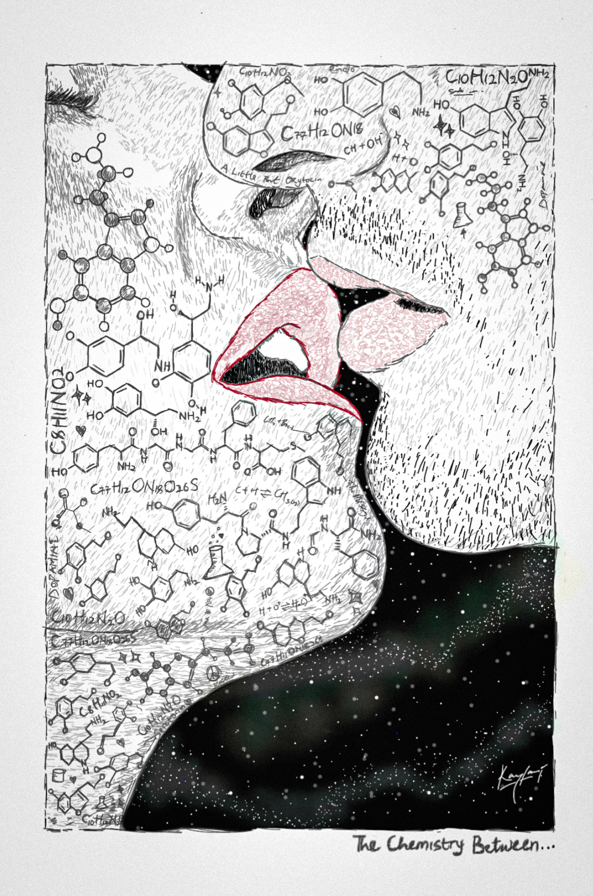
yunno i’ve been into arts since i was 4 i think, not really painting or sketching, maybe just get a pen, draw something, make scribbles, designs or anything just so i could show someone that i made this.
i’ve always wanted to get acknowledged for something i did, something i drew. and i think i did, in primary school, whenever they wanted someone to sketch or make arts, every one always pointed to me, vouched for me, i even went in competitions, and won! i love this moments
then headed to secondary school, met more creative minds, some even were more than mine, but as i rub minds, i started getting bigger in the arts i make, started making comic books, i became consistent, made more comic books than study books, for that moment i was like the king of comic book in my school and everybody always wanted to see what i did
goes on and on till 2017 when i started seeing digital arts, i really loved them and wanted to learn, but no body was there to really teach me how, all i could get from anybody i asked was just the software they used. so i watched videos, rely on my mind, did a lot of research, saved thousands of arts pictures i could find just to get references and be like the artists i’ve seen.
and i can say that really worked for me, i didn’t really be like the artist tho, but i became better on my own style and it’s great
joining the nft society made things much better, cos i started hearing stories like mine and saw much arts and interact with a lot of artist who turned into friends and it’s all cool.
so sad that i don’t really get the audience right now, but i think i really have to prove myself to them, and show my worth, make them acknowledge me like i’ve always did and will continue doing
i recently just joined the nft space, haven’t release a lot nfts, just 3, and none hand been collected, maybe it hasn’t reach the right person that loves it.
well my nft express what i feel, what i think. what my mind says. all the things i can’t really say in words, i pour them into arts and let them speak for themselves
i’ve been using sketchbook app since 2017, for a while i switched to adobe illustrator to try out vector arts and after all, still came back to sketchbook app. it’s really a great app. i’ve been using my phone and sketching with my fingers, never really tried using a pen(or lets just say i don’t have the resources for that yet) but it’s rally great and it’s really good, i’m making magics with my phone and fingers, magic fingers lol

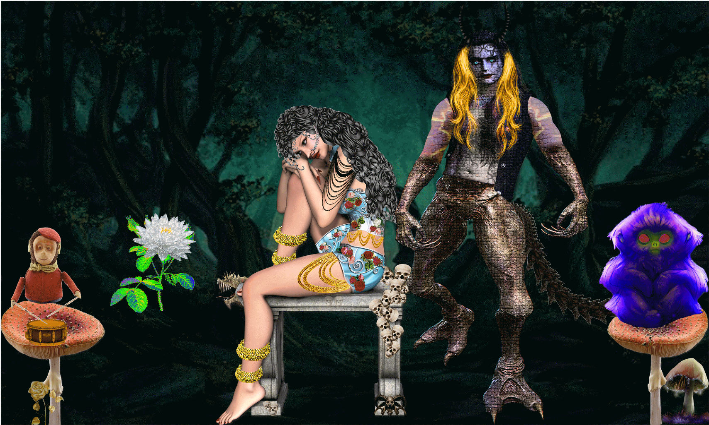
In my opinion every creator is unique in her/his own style . I have my own style , i don't copy anyone else's art style so that makes me unique as a creator. How i shaped my artistic path that's a nice question. And i will just simply say that i were destined to be an artist , so i was born an artist , i am living as an artist and i will die as an artist.
My NFT name is " Tale Of Eternal Love " that is actually inspired by the inner beauty of the person . This NFT tells beauty of face doesn't matter , beauty of soul matters .“Everything that is made beautiful and fair and lovely is made for the eye of one who sees.” .The "Tale of eternal love" is basically a love story of a demon and a beautiful girl .They both fall in love with each other and the make a tale of eternal love.
"Dear, it's the same you I fall in love - a hundred times,
In a hundred forms - endlessly from now and forever.
The more I hear the eternal tale, the eternal pain of love,
I can feel the pain as my own,
Looking back into the infinite, I can see your eternal face,
Twinkling through the eternal dark night
like the Polar star upon my heart's sky.
We two have come floating through the river of Eternal Love,
Deep within the Eternal Heart this love was born;
Now this eternal love has found its shore,
Let me put down all my love near your feet,
All the love of the universe, all its sorrow and joy-
Has lost into one single love;
It's the same love song -
sung by all poets of all ages."
I use 4 tools in this NFT : Computer ,Adobe Illustrator , Adobe Photoshop. , Explaindio .I made it on the computer with the help of these three software , and animation were created through Photoshop and Explaindio.

I like abstract shapes
find beauty in abstract shapes. my inspiration is nature
I took photos using Fuji XT-100 camera with XC 15-45mm lens and edited with snapseed
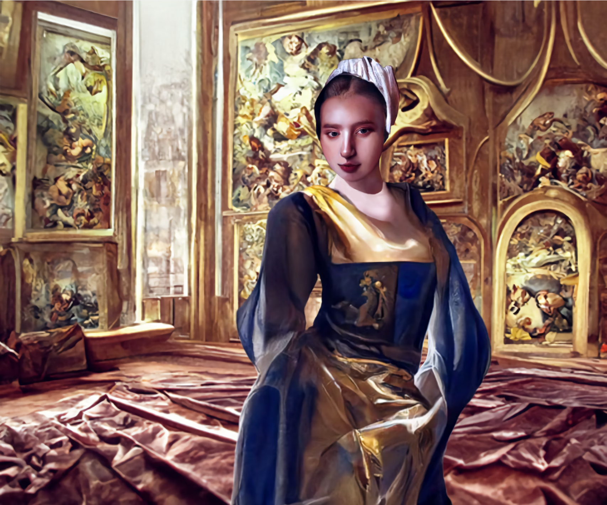
I have always been enthusiast about paintings. Art in general, true, but especially paintings and in particular those of Flemish masters ... However, my hand is not very good at drawing, so when I discovered the opportunities given by AI art I did not hesitate and I started experimenting! I like mixing styles and trying to produce different effects, most of the times still being guided by the aesthetic code of my favorite painters.
The maid in this NFT knows that the ballroom in this lavish palace does not belong to her, yet, when the ballroom is not ready and nobody is around, she likes to practice some dance moves and she allows herself to dream ...
This NFT is a "collage" made of two AI generated images: the background (the ballroom) and the figure (the maid). The ballroom was created with DiscoDiffusion 5.6, upscaled and retouched in GIMP to improve perspective. The maid was also created with DIscoDiffusion 5.6, background removed, upscaled and superimposed in GIMP to the ballroom after some editing to better match with the lighting of the backgorund.
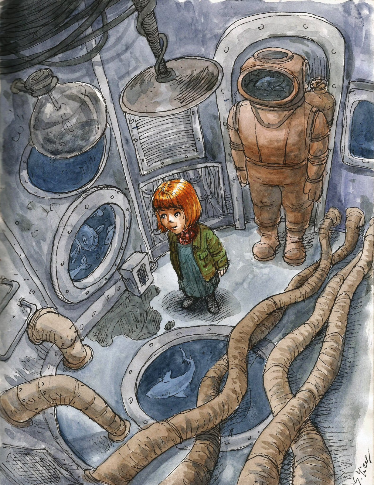
Every creator is unique. All the life experinces, lessons we got reflects our art vision.
I have not much key moments but i started drawing at 6 yo after my parents passed. Im drawing and painting since that day. This may be a very first key moment. Nothing shaped my artistic path. I just born in it.
Once a day, my teacher in art school said; birds never think about flying, they just flies. Painting is like a bird flying. If i am ready in that particular moment, i dont think what will i create. I just choose a medium depends on my mood and start without thinking the end. Most of my pieces ends with dark themes. I used ink and watercolor for "In Nautilus". It started with a young girl. Then i put her alone in a submarine. I think my mind find a place where i can be most alone.
I used ink for line drawing and cross hatching and watercolors for painting. After scanning the paper i made a digital touch in photoshop for contrast and brightness.
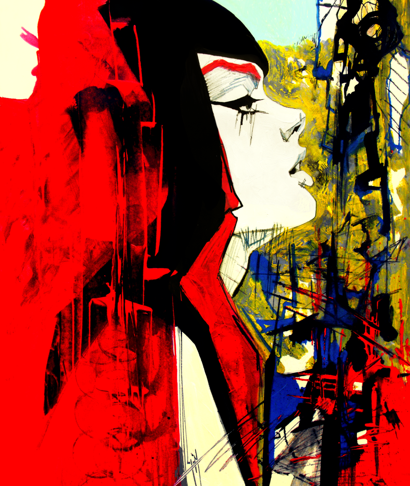
I started working as a muralist when I was 15 in nightclubs and then on sculptures for amusement parks with my parents. I'm used to making art every day of the week. Since starting to work more on my own art since art college I discovered I could enter the world of the characters I create in my paintings by listening to very loud music. Something I used to do when I needed to get into character when acting, using emotion memory. This process comes out very fast, afterwards I then calmly digitally paint more of the story over the image created whilst dance painting. The beats of music then start in my head instead. I find that every picture has a riddle in it which I have to solve, so the combination of the analogue and the digital is a joy to me to experiment with. With the digital art I can explore every single character I've made and recreate the stories for other people to read. Cartoons , films, music, stories and sculptures I've made I've recently been combining to work together for the first time ever.
This NFT was inspired by recurring dreams I have of female characters emerging from deserts, walls and vast, open desolate landscapes as marble statues. They dance in a circle and make plants grow and birds fly around them in patterns of black and white in the sky. I recreated one of the characters here, Red the warrior. Not a violent protagonist, a peaceful, strong and determined woman, like the women in my dreams and those that I admire. I painted her to remind myself also, that whatever happens to me I can handle it. To remain strong and not to allow any fear or self doubts overtake me. Red is a symbol of peace and strength to overcome difficult times.
Headphones.
Hip Hop - ODB mainly & The Shamen . Boss Drum on a loop to begin with seems to se the right atmosphere for these particular characters.
Next I use conte pencils, biros, acrylic paint, leftover computer ink & oil paint.
I like to slide the paint with stanley knife blades for a sharper edge.
Daler & Rowney oil paint is the best.
Canon left over ink cartridges.
Take a photograph with white boards around the image and then digitally highlight areas afterwards using my Wacom One Tablet and stylus, second hand refurbished, fantastic as I am very rough with equipment.
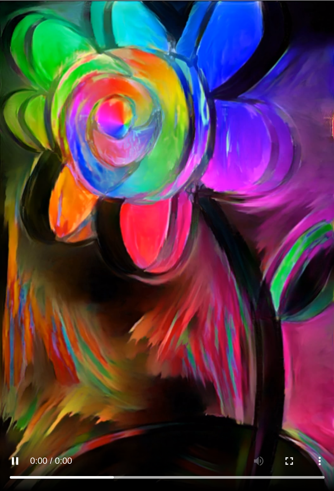
I started with photography as a kid, then growing up painting. In the last 8 years digital art, last 6 months NFT's.
I do spiritual and climate change art. I make fantastic mandalas that help me meditate. My current tree art is about appreciating trees and being aware that we need more of them.
My wave art is based on climate change. Water can destroy. We are creating storm surges that are destroying our environment resultant from extreme weather conditions.
Is about how nature flows, how we are connected that one thing leads to another.
As time goes on what we do to the plants comes back to us
I use my mobile phone i create an outline of the flower then i paint in the colours. I use chroma app which allows me to change the coloring I save as an image then change the coloring save that as another image after many images, I put them together into a animation
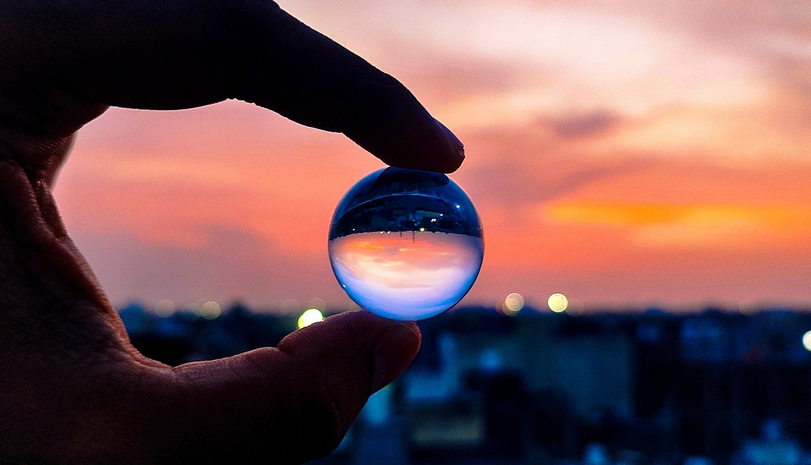
Hii I am bloom, from New Delhi, India. I was really into art clubs since school, then I took admission in Bachelor's of Fine Arts and after that I completed my Master's also from the same.
I can say that my art teacher in school help me a lot in shaping my artistic path and I hope that in future I could do the same.
Thank you..
When I m in depression I thought that there must be a parallel world which is far better than this world.
These photographs has been taken at the time of sunrise and sunset to show that there is a parallel world (Upside down) and in that parallel world there is hope, freedom and happiness..
I am a multidisciplinary artist. I like to use all types of mediums in physical artworks like oil, acrylic or ink. I also do digital artworks and photography..
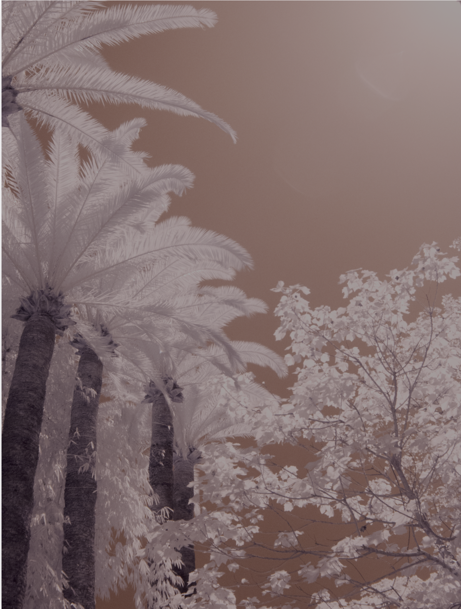
Photography acts as a way of memorialising the ever changing life into a permanent still life. I mostly shoot film, but have expanded into different digital forms e.g. infra red as it's something that I wanted to use to express myself.
This photo was shot in Infra red, and I did it to symbolise another world, another universe. It speaks that in a parallel world, perhaps the lost love isn't actually lost and we're okay.
Full spectrum Nikon Camera with an infra red filter, adjusted white balance in camera and just slightly darkened it in photoshop.
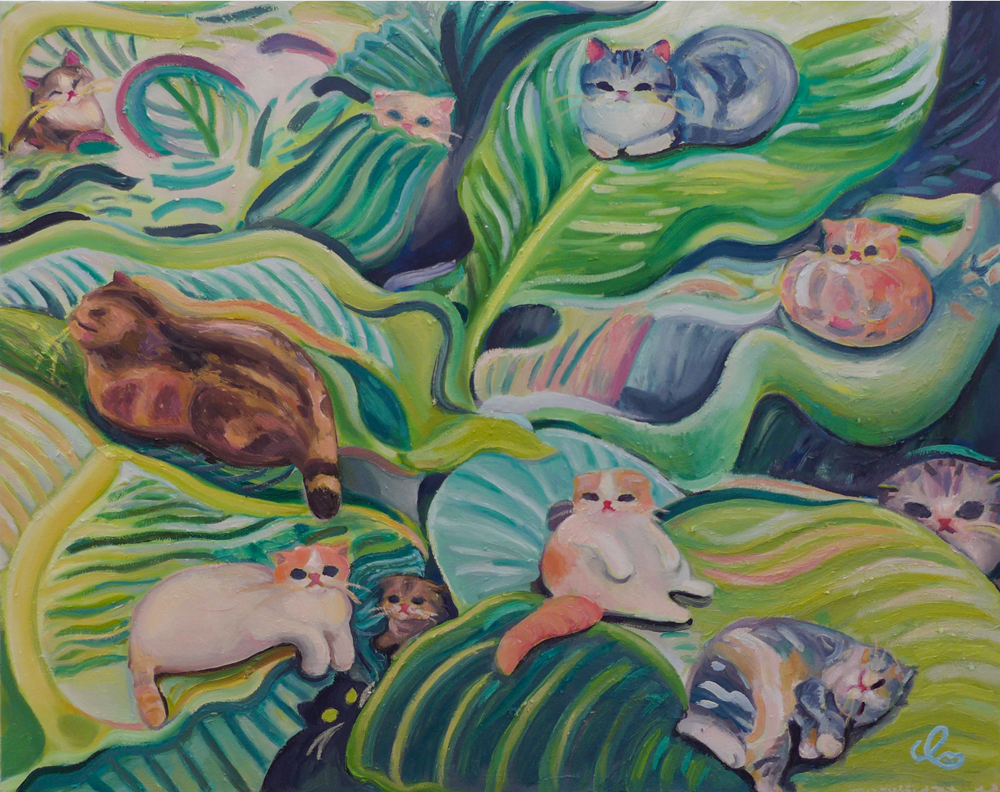
I am originally a physical artist, painter and an owner of 28 cats. I have fine arts education background for Bachelor and Master degrees. I always want to be a full-time artist. I started to be interested in NFT a year ago. I think it is another way to help me pursue my artistic career.
My art is inspired by my cats and the garden at home. I want to express how much I enjoy spending time by myself with cats and the garden. As I am an introvert and prefer staying at home, doing what I love.
For my collection on Foundation, my medium is oil on canvas. It is also available as a physical painting too. The physical piece is currently exhibited. I decided to use oil on canvas because it is my favourite technique since I was a student and created many great work of art.
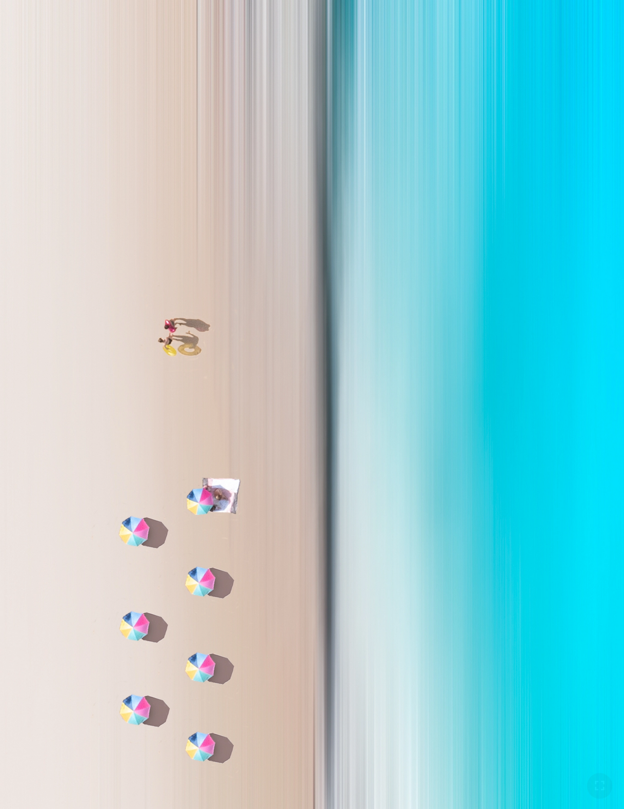
I have always loved photography. I come from quite an artistic family so it was in my blood from a small age. When drones came out it was love at first sight. The possibility of a totally unique view of the world from above fascinated me. Finally I saved up enough to buy my first drone and haven’t looked back. First flights were baby steps but after a trip to Iceland and a photographer who taught me how to fly and enjoy to the maximum my drone I was in heaven. The second part of my artist journey came when I began to use photoshop and found out the true potential of transforming my aerial photographs into tiny pieces of paradise.
My lifetime dream was to travel to Hawaii. After three years of cancellations due to covid I finally made it this summer. My aerial photographs express minimalism, clean, crisp photographs with beautiful blue seas and white sands. Adding the colours of the umbrellas makes the photo fun and the two people walking along the beach with the long shadows carrying the inflatable toy adds perspective of size and more colours to the photo .
This particular photo took me 4 hours to edit. It was taken with a mavic pro 2 at an altitude of 100 metres. At first I crop then spend quite a large amount of time cleaning up the photo. The colours are then adjusted to bring out the bright blues and the white sands I then cut out roughly the non moving elements which I adjust colour to accordingly. After this stage I add motion blur to the background and adjust the. Olive again. Then I finely tweek the cut so the edges are perfect and the shadows are perfect. Then I add the people to the notion blurred background and do a final adjust. To the colours.
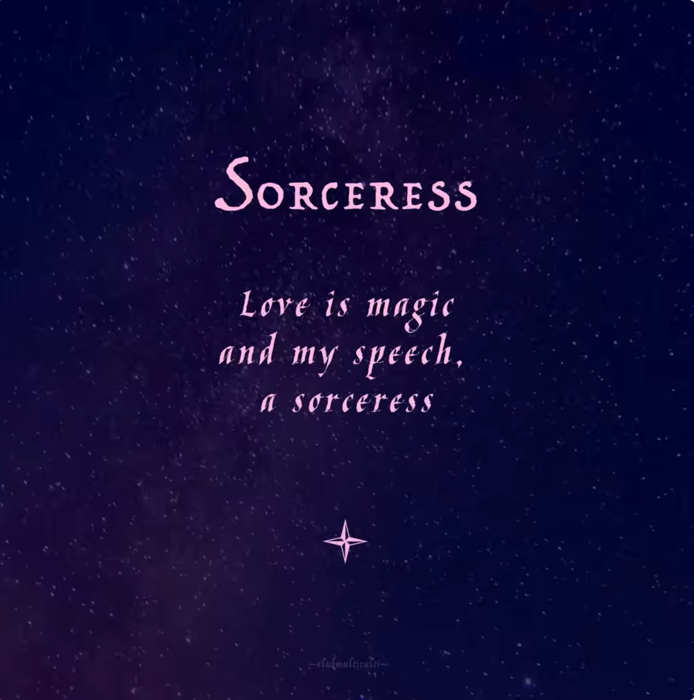
I'm a multimedia artist, graphic designer, educator, writer and bilingual poet based in west Texas. As a natural-born and self-taught artist, I've always been passionate about creating and communicating through different methods and mediums. Sketching, drawing, painting, dancing, writing poetry, and photography have all come naturally to me as a means of expression and introspection.
A melting-pot of international influences have also inspired my genuine admiration for diverse art forms, styles, cultures, languages, and beliefs. My creative work reflects the multitude of influences gained from a multidimensional life. I welcome you to my journey of artistic exploration and discovery. A journey through which I hope to rouse your thoughts and emotions with my expressions of art, design, and poetry.
“Sorceress” is a rich media poem that symbolizes the magical power of love and language.
I’m interested in the way different mediums can play with each other to create something captivating, just as speech and language can create magic in and of itself. That our words can be used to charm or captivate someone, to enamor them, is a mystical thing.
The still image is AI-generated with VQGAN+CLIP (via @poetry2art
) based on the poetic text itself. It illustrates yet another example of the wonders that language can create. The imagery, typography, and animated effects emote the ephemeral nature and spellbinding hold that love can have on us.
Language is love, and love is magic. It can take a hold of a lover lest it disappears just as easily as it can appear.
*poof*
I used AI to generate the still image and AfterEffects to create the text, animation and special effects.
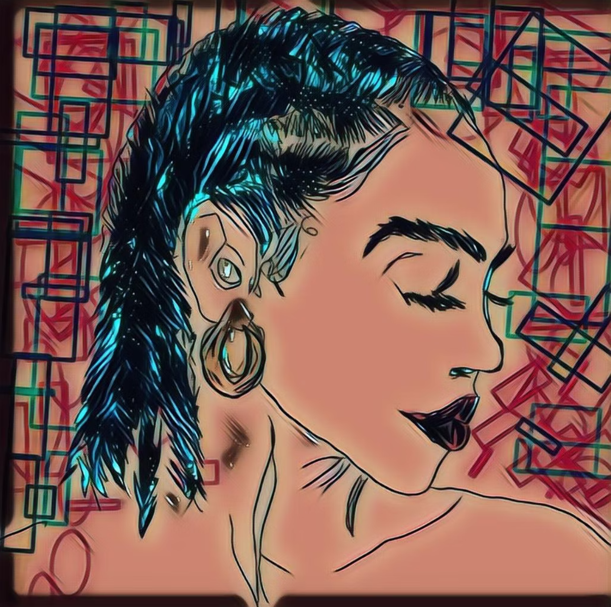
As long as I can remember I was an artist in every way possible: drawing, writing poetry, writing songs, playing musical instruments by ear, crochet and more. I have always enjoyed creating so much that I would try any medium to do so in a variety of disciplines. Even when I bake bread, I consider it an art.
I was conveying the striking beauty an African women, which I find under-represented in the space.
I used my sketchbook paint program to draw the image, from each strand of hair to the background geometric patterns. Then I post-processed the image with a photo filter.
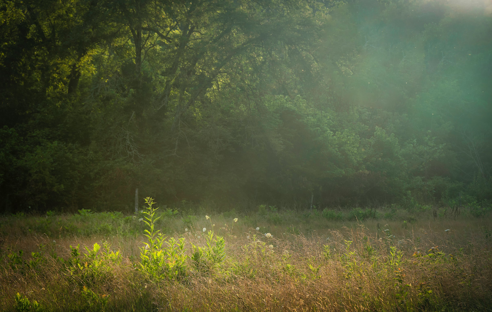
I'm Thomas (@colorlabs_io), a photographer living on a 200 acre working farm in Northern Virginia. I try to stay grounded in the land. I photograph what I can see, what I can touch, & what I know. I work to capture ordinary everyday moments, & attempt to make them extraordinary. My hope is that this is not too prosaic an endeavor, & that I can delight with simple images. The theme of my photographs is balance. I believe that art is art. Everything else is everything else.
This mystical photograph.is one of my most transformative & important photographs.. With this photo, I began using natural light as a means to evoke emotion rather than simply using light to illuminate a subject. When I view this photo, I can feel the ephemeral nature of the subject.
This photo was taken just after sunrise, & I used a thin piece of nylon to soften/diffuse the image. The details of the shot:
Model - NIKON Z 6_2
ExposureTime - 1/100 seconds
FNumber - 6.30
ExposureProgram - Manual control
ISOSpeedRatings - 125
Recommended Exposure Index - 125
Lens Model - NIKKOR Z 24-200mm f/4-6.3 VR
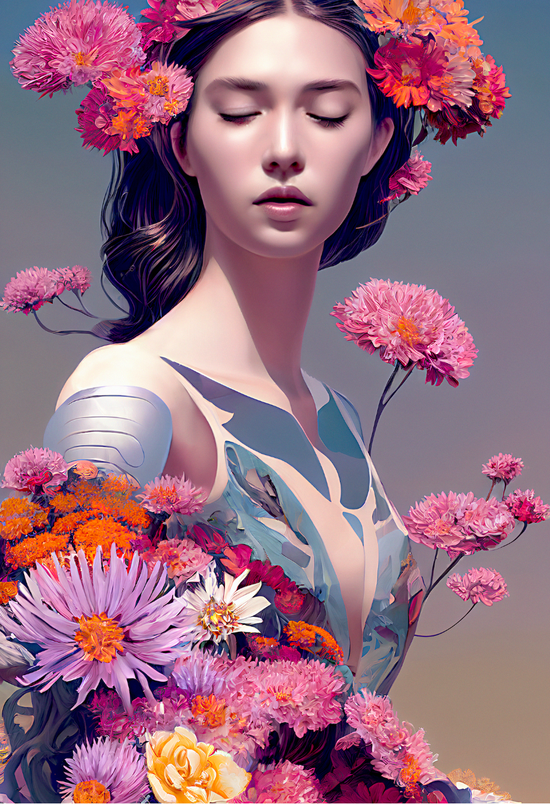
I would describe myself as a creative. I have a background in graphic design and a Bachelors Degree in Photography. Nowadays I work as a Lead Creative Developer in an agency at the intersection of design and technology.
In personal history, I've had quite difficult times. I lost my dad to complications of diabetes before I actually got to know him. At the time I was 1 year old. Later, my big brother died in a car accident when I was only 12 years old. These events have had a huge impact on my life and I've suffered from various mental health issues since I was a teenager. Anxciety, depression, panic attacks, etc.
Art has always been a form of therapy for me, a way of sorting my thoughts; A way for me to express myself as I've always been more of an introvert.
The series “I’m not really here” is about trying to find beauty, safety and comfort at these terrifying times.
The waves of global bad news are overwhelming, at least to me personally. I cannot even imagine the nightmares that so many people are living in.
At times I need to focus on something else so that I’m not drawn into darkness. Try to find a safe corner in my imagination and close my eyes.
When I was studying photography back in the day, I was reluctant to take photos of people. For me it felt awkward to use someone as a prop in my work. Or to make them act the story or emotion I was trying to convey.
In this project I’ve continued to explore the use of AI generated people as 'models' and apply my own style to create the final pieces.
I start with the concept and do the “art direction”.
For the initial raw images I use various AI tools, including Stable Diffusion and Midjourney and produce often several hundred raw images.
After curation, I use different tools for upscaling and cleaning up the raw images. Post processing, editing and manipulation is done in Photoshop.
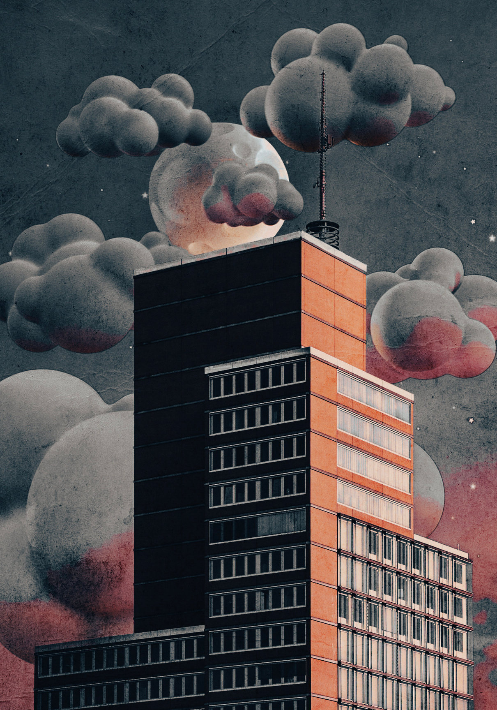
Hi, im a photographer & digital artist based in Zürich, exploring the world with a GAME BOY camera. I work as a professional photographer since 2016. i made my first experiences with digital photography in 1998 with the GAME BOY camera & since then I like to take pictures. I came to the NFT world in January 2022 to have an opportunity to show my art to the whole world.
NFT EXHIBITIONS:
2022 - Musee Dezentral - Minerva Wing 2x times
2022 - NFTNYC Spatial Gallery from NFTCLUB Berlin
Dreamy Red Tower URBAN 001 - 14
Inside the Dreamy Red Tower you can live your dreams.
A photographic illustration.
Winterthur, Switzerland 2018.
Camera: Canon EOS R with the 24-105 F4 lens.
Editing Device iPad Pro & Apple Pencil
Programms, Procreate (drawing app), Adobe Photoshop and Adobe Lightroom.

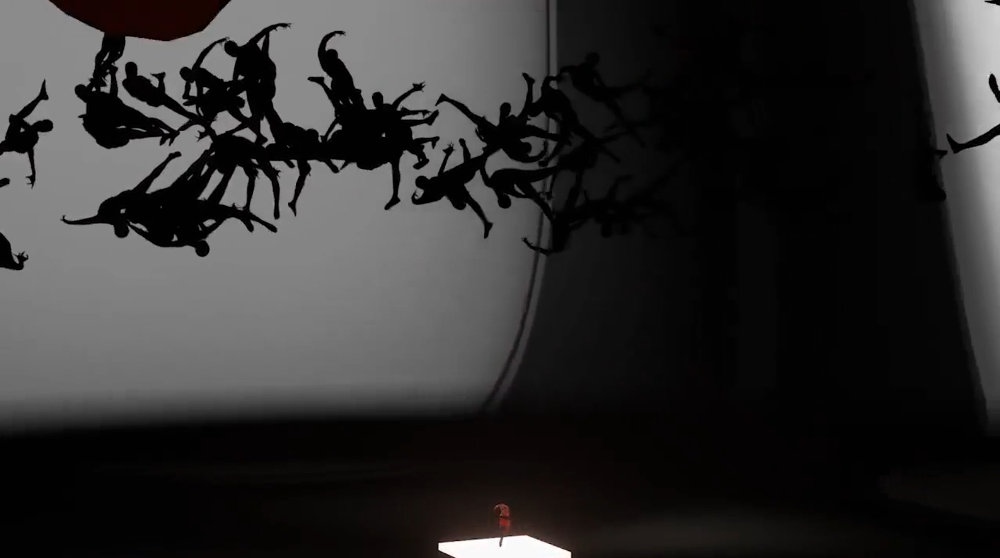
My name is Diego Mac, I'm a Brazilian artist, dance director, choreographer, dancer, video artist and 3D artist. Producer and cultural manager. I have been working for 25 years in the cultural and entertainment area in artistic projects that move between dance, popular culture, visuals, technology and management. Director of Macarenando Dance Concept. Artistic Director of Muovere Cia de Dança. Graduated in Dance. Master and specialist in Visual Poetics. Doctorate in Performing Arts. I started my professional career in the 90s, having worked on more than 300 cultural projects. My work is recognized nationally and internationally, with numerous awards received. Artistic creation mediated by technology is not something new for me. “Pas de Corn” (2006) is the first and most emblematic work resulting from this relationship: a video that presents a corps de ballet made up of popcorn and that uses humor to satirize the dancer's body. The work received many awards, participated in several festivals and is used as a reference in research on videodance (https://www.youtube.com/watch?v=l573mRwt_Cw). “Under the table” (2007) and “Moving in Parts” (2008/Açoriano's New Media Award) are other works created in the continuity of the research with videodance. In 2009, I received the CAPES scholarship for a master's research in Visual Poetics (PPGAV/UFRGS), supervised by Sandra Rey. “The Collector of Movements” (2011) is the work resulting from the research, which engendered concepts of movement, collection, hypertext and interaction. Currently, I dedicate myself to artistic creation based on the hybridism between dance, 3D simulation, NFTs, web3 and metaverses. In this process, a lot has been happening, and quickly. I published three collections of 3D dance pieces: “Sylphides 3.0” (2 pieces, available at Foundation, in .ETH), “What would be your last kiss?” (7 pieces, available in Objkt, in .XTZ), and "Hypnodances" (6 pieces, only 1 available yet, in Formfunction, in .SOL). I also published the piece "Crytogam" (13 editions, sold out on Objkt, in .XTZ). The work “Sylphides 3.1” (which I am submitting in this contest) has already been selected and exhibited at the following events: moveMINT NYC: The Experience; NFT Sao Paulo; Origen Videodance Festival; Movimentale Audiovisual Festival; International Meeting on Video-dance and Video-performance; Thorium Gallery District Spatial Metaverse; Sardinia Film Festival (finalist); Cuerpo Mediado Videodanza Festival; RS International Videodance Festival; Eku'e Videodance Festival; Dance & Performance Arts Gallery; Serbest International Film Festival (semi-finalist); Imajitari - International Dance Film Festival; International Screendance Festival of Chile (semi-finalist); the first 50 Latin American artist gallery in the Open Metaverse. I was selected to be part of the team of 20 artists from the “Brashill” movement, which seeks to promote Brazilian art on web3. And I have also managed a series of meetings with Brazilian artists of the performing arts in which professionals with a background in this universe are invited to report experiences and offer basic instruments on NFTs. This profusion of artistic creation with 3D technologies and NFTs has a lot to do with a vital artistic need for expression, to talk to people, to be in the world, acting, creating, publishing, criticizing, and that dance, in its most traditional, does not allow, and perhaps even castrates, either because of the necessarily physical and face-to-face elements, or because of the political-economic contingencies of always and now. For my work process, considering the entire history of operating in the art sector for many years, these possibilities have been revolutionary. Creating my own things, deciding when, where and to whom I want to sell, how much I want to charge, setting royalties, monitoring the movement of the work and continuing to receive for subsequent sales are possibilities that deconstruct and rebuild my self-image as an artist, bringing empowerment necessary in a reality where art is increasingly being pushed under the rug. In fact, these technologies have brought me closer to a goal I've been chasing for many years: “putting my dance on the Amazon shelf”. More than a commercial goal, it is, above all, the desire to popularize scenic/performatic dance, to form an audience for art and to dominate the economic processes that involve artistic making. As these new technical possibilities allow dance to be understood and operationalized as an item, as a digital object, the possibilities for placing this object on shelves, marketing and distributing it as a product also open up. This is one of the applications I've been making in these environments: using technologies to distribute and commercialize the artwork I make in different marketplaces and communities. My links: https://linktr.ee/diego.mac
Sylphides 3.1 is a videodance3D, created by mixing and hybridizing dance with 3D animation-simulation. Title numbering refers to Web 3.0, and each item in the collection receives a subsequent numbering: 3.1, etc. However, it is not just a form of organization. The number has to do, above all, with being on the Web 3.0, moving around and creating dances in it. How to dance in Web 3.0? How to dance on web3? How to choreograph in the metaverse? How to reprocess the revolution erupted by the relationship between dance and 3D simulation? As an dance artist, I seek creative answers to these questions by mixing dance and 3D , NFTs, web3 and metaverses, provoking a dialogue between classic and contemporary, and reflecting on the future of Art+Dance. When I create dances with digital materials, my whole body is involved in this process. For me there is no distinction between physical performance and digital dance. And I think it has to do with the future of metaverse relationships. The name of the collection is a direct citation to Germanic mythology, and especially to works of great importance in the dance history: “La Sylphide” (1832) and “Les Sylphides” (1909). The pieces are used as a starting point to provoke the relationships and similarities between the classic and the contemporary, and to reflect on what is yet to come in the future of Art, in general, and of Dance, in particular. New bodies, new dances? The aesthetic and artistic elements explored in the sylphs of previous centuries through airy female figures with revolutionary and abstract dances on tiptoe are now reworked based on new protocols, new codes and new paradigms provoked by Web 3.0, by sci-fi and biofuturism. Other bodies, other dances. The figure of the feminine, romantic, air genie, vaporous, enigmatic and superhuman sylph gives way to androgynous figures, neither masculine nor feminine, decentralized, with simulated physics, soft parts, procedural choreographies, disjointed movements and articulations hyperflexibles. Hyperhumans. Several bodies. Various dances.
Sylphides 3.1 presents 200 sylphs in embryological form. Various techniques and elements of the language of dance, such as the waltz, the wheel, the control, the support point, the mobility of the joints and the relationship with gravity were submit to the techniques and elements of animation and 3D simulation, such as ragdoll bodies, soft bodies, plastic bodies, expansion and contraction of force fields, fluids, winds, low gravity and impulsive surfaces. Thus, there is a collective ballet body, with a single pulse, but with particular focuses and dismemberments, exploring the relationship of classical ballet elements with modern and contemporary dances. The work is accompanied by an original historical recording, published in 1916, of “Les Sylphides”, by Ballets Rus Serguei Diaghilev. The software used in the creation were Blender and Adobe Premiere.
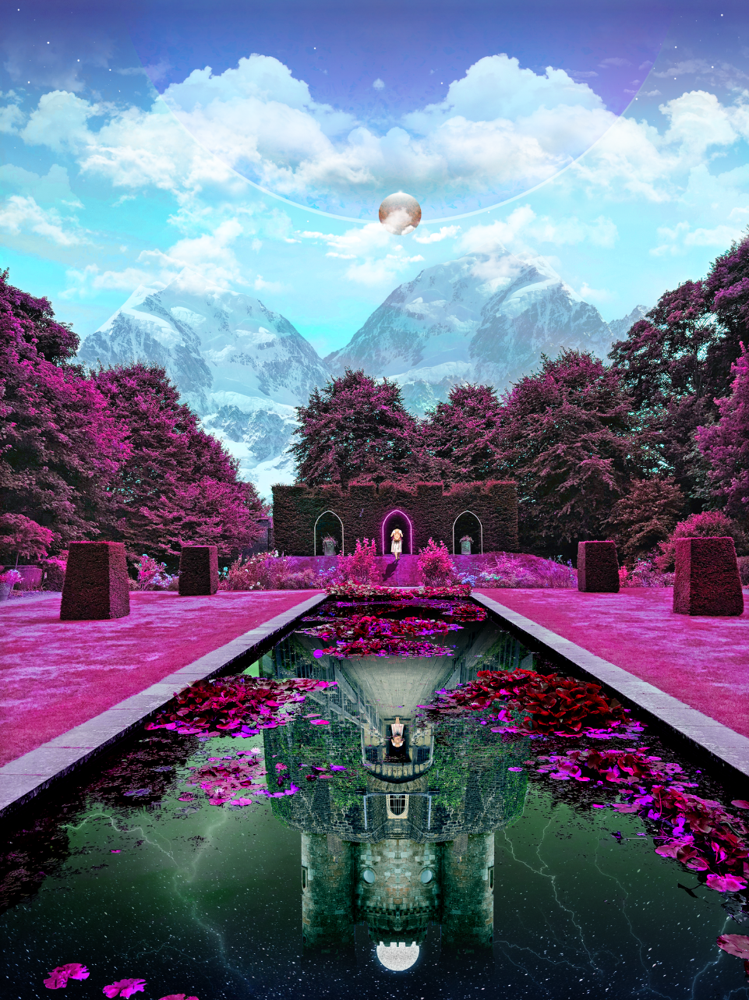
Dream Builder, World Manipulator. Occasional Writer. Lover of Marmite. I am a sum of all of these things.
I've loved art and design since an early age, coupled with a passion for science fiction and fantasy. A lot of my work bleeds over into either extreme.
I'm a huge fan of mixed media, blending photography, digital illustration, and AI elements to create larger format pieces that have their own style and look. I'm fascinated with Web3 and technology, and how art can be coupled and engrained within it.
"Temple of Enlightenment" purposefully has multiple meanings, leaving it up to the viewer to interpret for themselves.
On the one hand, it's about finding hope and salvation and leaving our darker woes and troubles behind us.
On the other, it's about being wary of something "too good to be true, and digging beneath the surface to uncover the truth. Not everything is truly what it seems, and how to avoid being conned or scammed. (Something we commonly hear about in the NFT space.)
The main source images were photographs taken by myself using a Nubia Redmagic cell phone.
The design was created by manipulating these photos, and combining with other stock images and digital illustration elements in Adobe Photoshop.
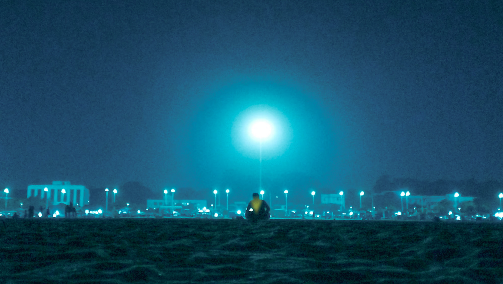
Being a photographer it's always a journey for me to be exploring new things and experimenting with angles and frames ,it's a great I edit my vision and present in a unique way !
Colourful Seconds Of World
Capturing is always a art of visualizing and observing by your own vision, Every moment is clicked by small lens of mobile.
"Peace In Sea"
Enjoy the night in sea with cool breeze into my phone listening songs..!
"An image explaining many pains in search of peace"
This was clicked my phone and I used mobile lightroom to edit and used my idea to put a new mood in a photo !

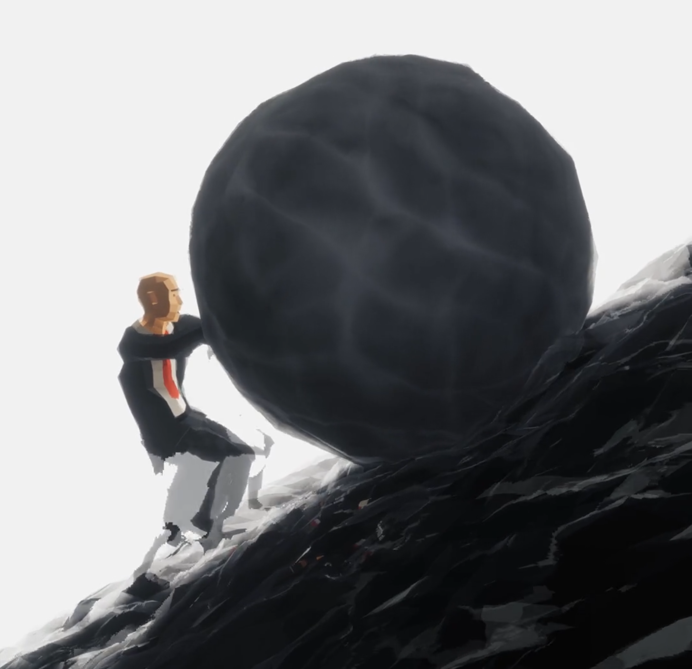
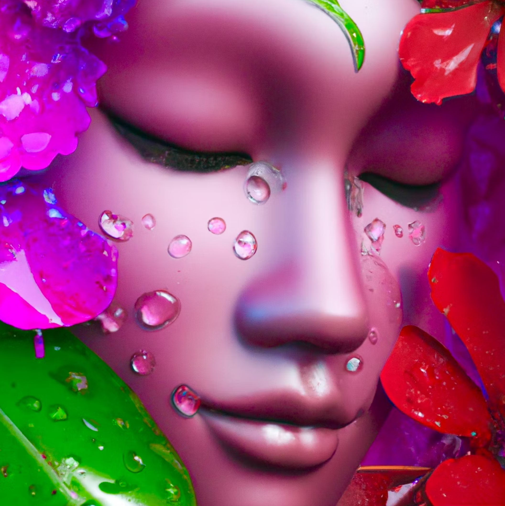
I am a very spiritual and passionate person, and although I am sometimes introverted and find it hard to express myself speaking, I really enjoy expressing myself through art and poetry. In my career, since I was a child, I have always had a special affinity for all kinds of art, which has led me to experiment and try various means to express myself through time.
I started collecting and supporting other artists in 2019 and I discovered NFTs in August 2021, when I fully started working in this field, as a hobby supporting artists in the space.
In November I began to show my designs, since I had previously worked for 10 years making designs for advertising for other companies. And in December many collectors began to be interested in my art, which encouraged me to continue creating. In less than a year I have sold around 100 1/1 works, I have been chosen to exhibit in the metaverse at decentraland, I have exhibited in New York at Times Square during the Armony Show, and at NfT show europe recently, I have also been selected by Monolith Gallery to exhibit my work in future exhibitions.
All this has made me have an illusion and a huge hope in my dreams, since since I was a child my dream was to be an artist, like other members of previous generations in my family.
This work of art represents the strength of dreams and the motivation of the human being above all possible difficulties.
I firmly believe that dreams can be fulfilled, with enthusiasm, motivation and work, and that we are strongly linked to our intuitive nature, so I try to represent a woman sleeping in the middle of nature, with an expression of tranquility and well-being that represents the absolute assurance that your wishes can be fulfilled if we work for it and have a burning desire to achieve them.
My inspiration, as in other previous works, is the feminine nature linked to our intuitive nature.
I have used several artificial intelligence tools for this work, generating a lot of images of the same idea, trying to change the words in the description until I get the result more in line with what I wanted to represent, then it has been retouched and perfected as well as modified in several aspects with traditional design tools to achieve the final result, I try to curate my artwork to have a masterpiece as result.
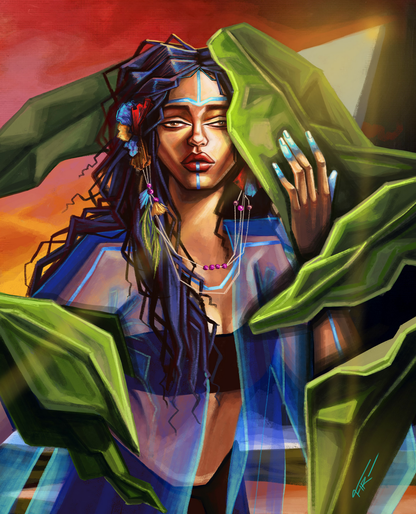
I am an multidisciplinary artist but well known as Digital creator with edgy lines. Interest in art, passed on from my mother which made me creating art since the time I developed motor skills. I am very much into different human personalities, their identities, aesthetics and stories. My all digital works showcases the conceptualized portraits that reflects their stories through their unique visual appearances and edgy lines is what plots them.
My only inspiration was my mother, seeing her doing art from the age I hold my conscious. Well , my NFTs are always about the identities. Creating and emphasizing on important concepts or stories through the faces or stylized portraits.
I only use Adobe photoshop for my digital paintings /NFT. And I have always been grateful to my pc system and the software as it taught me so much and gave ability to create beautiful art on digital medium too otherwise I was just limited to the manual paintings, oil paints and other mediums.
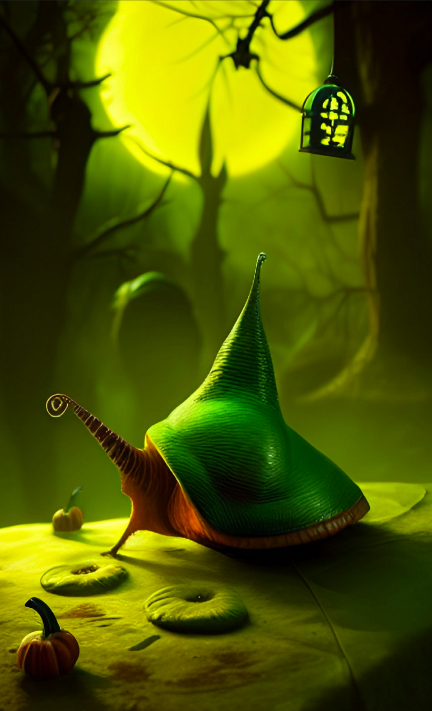
I’m agoraphobic, and this problem made me reconsider all my life. I had a crazy business life, and suddenly my life changed radically.
Now I enjoy with calmed places and nature, animals, open empty spaces, sea, mountain… it’s so amazing, so beautiful that I felt that I need to express that feelings, my inspiration. I needed to share all the things that makes me feel good in life. I had my drawings, where I found the way to express myself, and NFTs the way to share it with the world.
It’s wonderful!!
This full collection, the MetaBugs is inspired in nature. Have you ever stopped to observe the slow walk of a snail? the flight of a bee? How does the spider build the spider web? it is hypnotic, beautiful, relaxing. It's life, that's what inspires me, life!
I use my phone to capture all those things that I see and that inspire me.
for this NFT I have used an AI program, Dreams to obtain a sketch, which I have finished with the ClipStudioPaint drawing program, which is the one I usually use to make my paintings with a Wacom tablet.
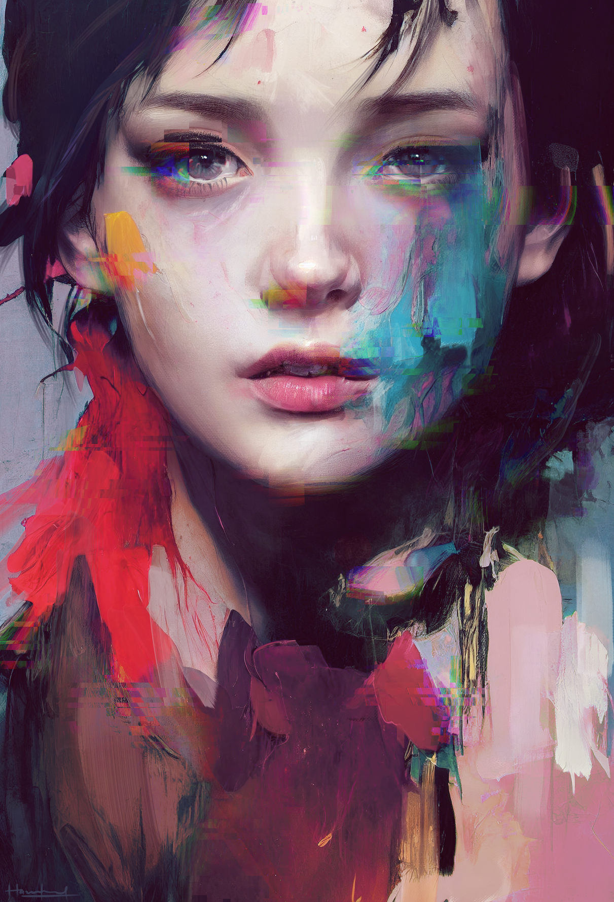
I have been an artist all my life, painted more than 80 murals and also perform as a speed painter on stage. I also have a popular YouTube channel where I share my Procreate tutorials. For my NFTs, I combine 3d visuals, 2d and Neural networks to create mesmerizing artworks.
The inspiration for the NFT comes from seeing pretty girl portraits by pretty artists. I wanted to offer another side of the story, inspiring options for female artists to be something other than a pretty face painting sexy portraits.
This is a self portrait after entering the NFT space. I sleep on the opposite timezone and see only one hour of daylight everyday. The habit has caused insomnia and permanent swollen eyes. The only light we see are the lights that’s coming out of retina screens. This is the life of a Web 3.0 degen.
The style is inspired by the Alla Prima movement, an oil painting technique that involves completing an artwork in a single session- usually during live drawing or outdoors(plein air). In order to recreate this style, i fast tracked the production using Stable Diffusion- an AI tool.
The output is then manipulated and overpainted in Procreate to implement the narrative, spontaneity and looseness of the genre. There is also a slight glitch effect to simulate the never ending pixels of web3.
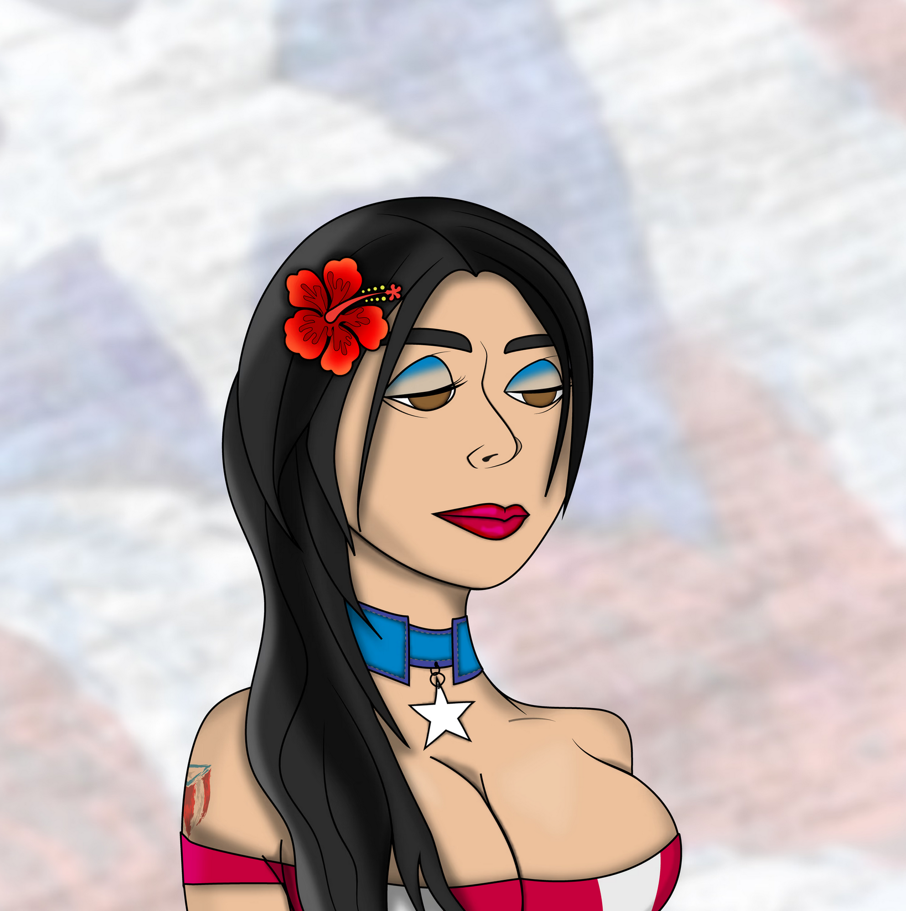
I’m a US army Veteran, father of 4, husband, musician and graphic designer.
My art is crisp and sharp because is all about vectors.
My Tamed Apes have evolved from being and evolution from the BAYC and now becoming more personal. I have build a community helping with advice, collecting from them and been active.
I invite you to check all we have achieved.
Thanks
Tamed Apes started by taking the BAYC and evolving them into humans. Now, I can still doing that, but I want to give a personal touch completely out of evolving BAYC and giving this personal touch.
I want to create female and males warriors, soldiers, personalities and looking to create a Card Game with some of them.
I like to give a unique 1/1 Art to each customer, friend and holder.
All I use is Adobe Illustrator
I have a huiion drawing pad and my OS is Apple.
I can use others drawing apps like procreate but I love the sharp lines and all the control I have on Adobe Illustrator.

I have an unusually strong interest in theatre, cinema and literature. I am the only person I know who takes notes on the most important passages. Just for fun! Additionally, I am unusually systematic in my approach to work. And I always got positive feedback about it. The areas of interest I have mentioned feed my art.
Learning to play the violin allowed me to have a different perspective towards art. Thus, transformation and rhythm are one of the most important features that shape my art. This rhythm is similar to the rhythm of music, but instead of notes and sounds, colors and shapes are used.
The term “emancipation” is often associated with the value of freedom. The nft project is emphasises that The effort to secure equal rights for women and to remove gender discrimination from laws, institutions, and behavioral patterns. Women cannot be restricted to certain patterns and forms.WOMEN ARE POWER - WOMEN ARE UNIQUNESS. Support development approaches that lead to gender equality and the empowerment of women.
The first step of the design is the sketch. I edit the model created with the sketch with a CGI program. I am using 3ds max modeling program. Then I use photoshop and after effect programs for advanced corrections.
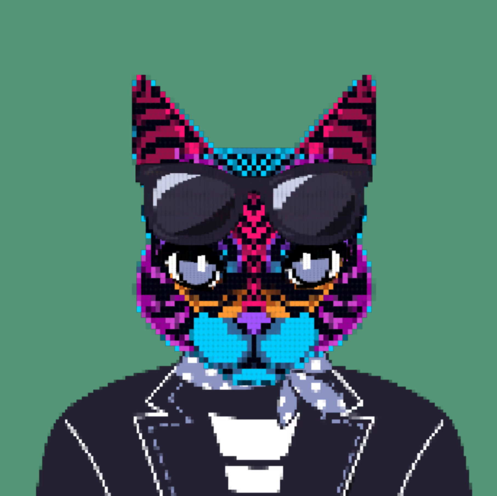
I am a medical student and since I was a child my parents wanted me to be the doctor, I never dreamed of anything else I just kept working hard to match the standards they created for me.. Idk how to describe it but it was the only way for me to get noticed by others, to get affection from others, by topping every class. But then came time wanted to stop and run away, to break the chains and to start again. I realized how I had never lived my life but just wasted it to please other people that was when I made sketching, writing, drawing and creating new characters my way out of all the stress. That's how NFT creator Humna came into being. Althought I am new and I spend so much time in engaging with people to share my art, I know I am never gonna regret it because I am loving it and it's worth it.
Coming to my Collection Roexo Cats, they are diverse pixel cats with different features, gender, proffession and likings each cause they allowed their race to grow individually without forcing their opinions and dreams on each other.
My english is not very good, I hope you like Roexo Cat #001.
Thank you.
Regards,
Humna Wahab

My artistic did not begin when I was young. I was guided to other aspirations by those around me.
Continuously overburdened and overshadowed by the greatness of my grandfather, whom was a successful architect in life.
I stayed away from the arts as anything more than a hobby or distraction.
In 2019 I lost my father, and swirled into a depression, turning away from even the most important things in life.
But, one day, in a strangely anticlimactic fashion, I decided to start sketching out my feelings amidst all the darkness. This drive to at least attain some normalcy brought me to the slow progression of skill.
Progression turned into a powerful drive. Something that wouldn't let go of me and still doesn't.
What if I could take a simple skill, sketching and the use of Pastel and turn it into something more? What if I could push and push this until I discovered my own worth?
There wasn't a shadow after all. I should have been inspired by my family and by my grandfather to be what I wanted! I wanted to push my skill till I could draw whatever I wanted and use it to change the things around me.
And so... in this next piece you will see that continued journey.
Our universe is not completely expressible in its complexity but rather in simple forms, that we make, to bring it into our understanding.
Not digitally altered except for cropping.
Specifications: 63cm by 43cm
Sakura Pigma Micron Pen .05
Pastel for Celtic Knot pattern
Charcoal for internal spaces
No re-stroke for the figure.
74 hours work time
CAMERA
Canon EOS Rebel T7
DATE
2022:09:16 14:53:03
EXPOSURE
1/64
F-STOP
F/4.5
FOCAL LENGTH
33.0 Mm
ISO
250
LENS
EF-S18-55mm F/3.5-5.6 IS II
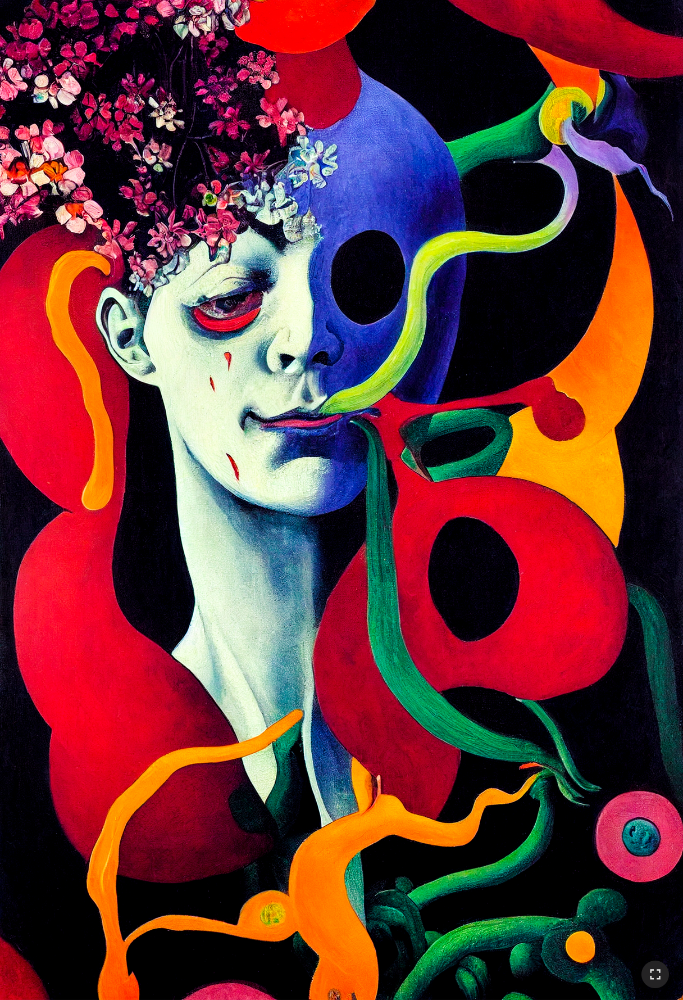
Does the universe really that ordered and explained as natural sciences try to convince us? Or is there something hidden? Something beyond classic perception? Questioning Questioning Questioning yes it is me. Mutating and Blooming, mixing, fixing, and deconstructing. New media, and traditional tools, why not mix them together? I m an oil painter by my soul and an AI artist by my Ātman. I went a path through conservative mentors, ambiguous art universities, and many other peculiar places though still moving forward to the great unknown of our existence.
Split-repeat-complete is a work exploring the controversial topic of self-building in modern society. On the one hand, we want to live a happy life with our own intimate path. On the other, openly or subconsciously, we want to prove ourselves worthy to the society which surrounds us. That brings us to the stage of split, when we create a second(third, fourth, etc) personality. As new persona we quite often make the same actions or mistakes which we did before, entering the stage of repeat. And then, if we achieved the goal, for a little moment, we can feel complete.
For creating this work I was using midjourney AI test mode, however as it was important to keep Fauvism touch and particular symbolism I decided to make a couple of quick sketches before prompting and experimenting with the color palette. It was necessary for control of the final outcome as quite often the results can carry you away from the original goal. After the generation was done I perform classical post-production clean-up in photoshop and enlarged the final outcome.
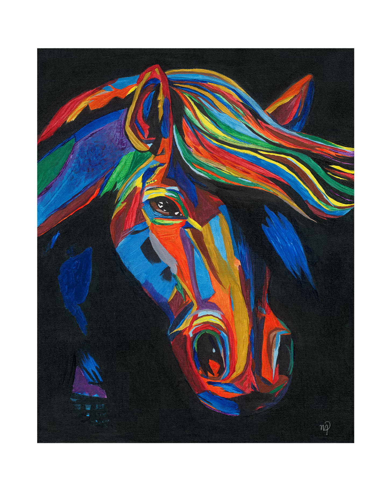
Covid really started off my passion for painting. I was always artsy and did sketching but never touched paint and was serious about it as a career until I had so much extra time on my hands. It was a mental escape, the only thing that actually worked for me.
I like to add as many colours as possible to show how bubbly, energetic and positive my energy brings. I like to brings cartoon expressions to real animals. Not everyone is lucky enough to see wild life in the flesh, not everyone has the ability to travel. I like to bring elephants into your home, whether it's a physical canvas you get to touch or an NFT, digitally displayed.
Acrylic paint on canvas is my medium. I love to use sharp edges paintbrushes so I can freely do small outlines with a blast of colour inside. I usually take photos but some are also scans when I was experimenting. I usually start off by using a pencil to make a rough sketch and then once happy I start with paint.
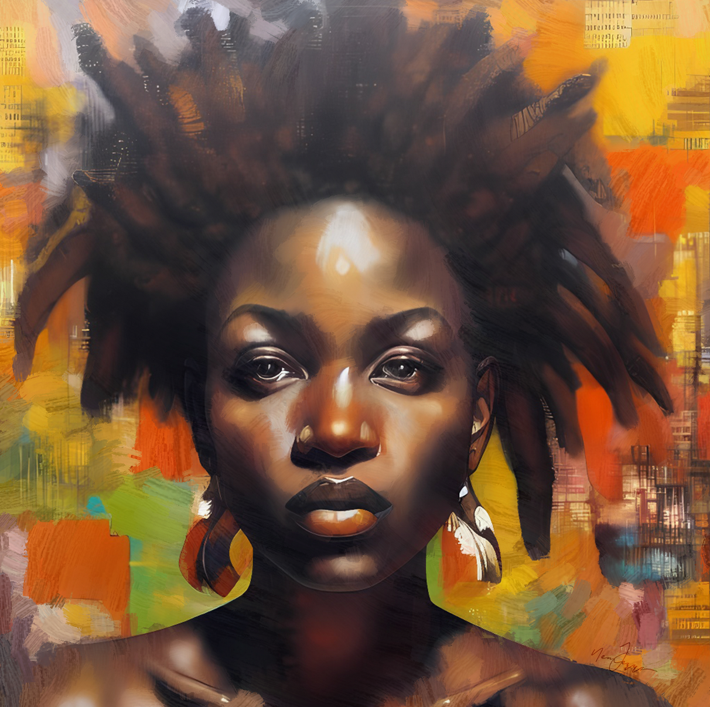
Having a range of chronic illnesses shaped my artistic path. Art is the only way for me to express my feelings daily; desperation, sad, happy etc. My arts are unique because they represent genuinely my feelings spiritually and not only to me but all others who connect with them. As a disabled creator, I hope to inspire others with my imagination. In addition, for my love to help wildlife preservation, 20% of my proceeds go to saving wildlife.
My main inspiration comes from my life itself. Having a range of pain and sufferings daily, my art expresses my feelings at that period. Having limited efficient time to work, I use AI as a reference photo and used mixed media to paint and edit the raw output. I let my emotions carry through me and transferred them to each art.
I use the free tool of AI where the raw output is then transferred to photoshop to be edited and painted with. I love using mixed media to produce different outcomes and perceptions. I normally paint with oil, acrylic and pastel using different brushes in photoshop.
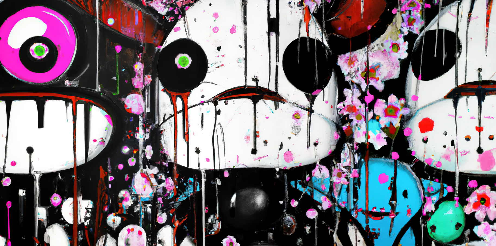
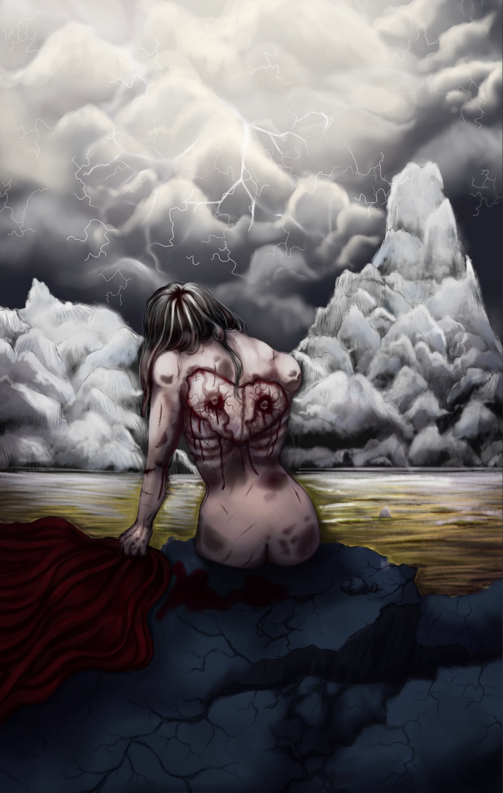
One of the things that make me the most unique is the immersion of my own creativity, I have a very strong creative flow and I can project very well from photos, words, feelings, smells, flavors, etc. There aren't many defining moments in my short life, but I think the potential they saw and see in me just made me better at what I do: art in all its forms.
My NFT expresses genuine suffering, betrayal at its most dramatic, bloodiest, most exposed. This painting, as the name says, represents betrayal, the breach of trust, the most painful feeling that can arise from absolute love. My source of inspiration was a similar event that happened to me, and it became so strong that I needed to "bottle" this bad feeling on the board, to cure myself of it, and I put all this bitterness in the colors of the board to express the message well. I confess that this was, in a way, beneficial because it broadened my range of artistic conception.
To begin with, with only pencil and paper I developed the complete rough sketch from scratch. After taking a photo, I scanned it to start the whole process of scanning and painting in Ibis Paint X , the application I normally use in my arts. In the order of first lineart and second painting over to shape I have completed each part of the frame individually in great detail. The painting took 8 hours and 35 minutes to complete.
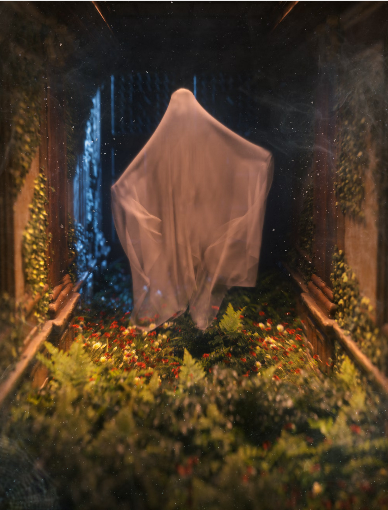
My name is victor, i’m a young 3D artist from France. I started my artistic journey 6 years ago with th creation of short film with small special effects. I saw in that a lot of creative possibilities and i wanted to learn everything i could in order to always create new effects.
After those first years making 2D i decided that i my was time to open a new door of possibilities, which is the 3D. First i was following tutorials, learning the basics, and i started to let my imagination tell the path to follow and creating what i started to call art.
That’s how i started to create my first scenes, my first objects. With all that bag of knowledge, i was now able to think about an idea, a concept, or replicate a scene that i turned in art.
Everything is possible, everything that i imagine is possible to create, that’s what submerged myself.
I try more and more to create my own style, adding an identity to my creations, the goal is to be able to touch people. I want to be remembered by my style, not by a name or a signature.
I try to create render really different from what people see through their feed, give something new, so i can stay in the head of people.
Ghost is a creation of surrerality. Nowadays, we know the importance of respecting the nature and the environment. This piece, more than the skills, is about a message.
Let’s respect the Nature, and take care of her. She is stronger than us, she can take over us in any second. We need to let her live her life.
This ghost represent the spiritual aspect of her protector. He is here, making sure she is safe and pushing back everything that could interfere.
The nature is slowly taking over the building in a world, where everyone in respecting and living in harmony with the Nature.
This piece is entirely 3D generated as all my pieces are.
I builder the set in cinema 4d, and rendered everything with octane. It’s a powerful render engine, using path tracing for the realisme.
I also used different softwares for the details.
The ghost was simulated in Marvelous Designer, which is a cloth software.
Plants were grabbed on quixel bridge and textured inside of c4d.
The lightning, texturing, and rendering where also made with octane. And the post process was made inside of After Effects to add a cinematic and gorgerous look !
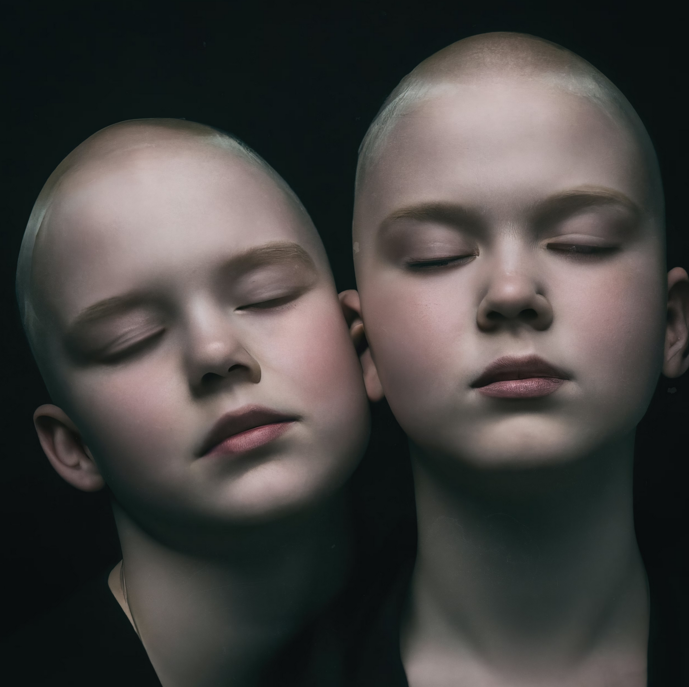
every single minute in my life so far has led to the current and constantly morphing result of my self and my output. creative work always has something alchemical/shamanistic for me - with every person a different unique mixture. a quick look at the current 3d and ai art scene shows my own way, off the beaten track.
the start of this series was initially the challenge of achieving photorealistic results with AI.
at the same time and actually always i am thematically interested in the depth of every human being.
the first and often arising impression, that it is about simple twin portraits, is wrong. rather a person meets himself in each case. in the dream, in the un-dream, in the thought, in the feeling.
currently 12 works are available, 2 of them have been collected so far.
in my work with AI, i always have the goal that the raw file from AI matches what i had as a goal.
so i am a master of "prompt" and not a photoshop plastic surgeon.
this series was created with DALLE2, then enlarged and slightly color adjusted in PS and grain added.

Lazy Frogs On The Road is a non-generative collection of 999 collectible created one by one.
my inspiration has always been street culture, graffiti, music and skateboarding.
The collection I want to create something fun that involves all my inspirations
Pen, paper and adobe illustrator
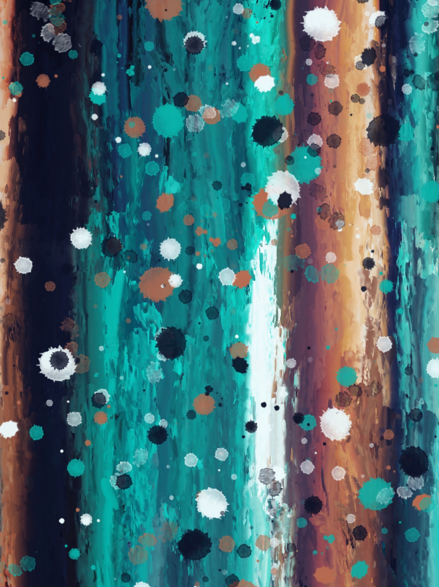
I am no more unique than every other individual that has ever existed. The key moment in my life that shaped my artistic path was my injury. Before then I was almost exclusively left brained and now I have been adapting and evolving to utilise my right brain as much as possible.
There is no message expressed in this NFT other than the expression of abstract art to catch and please the eye. The inspiration for this piece is the ambience of a forest consumed in fog.
The strokes and splashes technique I use consists of brushing out the colour palette into a structure I find pleasing then adding splashes of core colours until it feels finished.
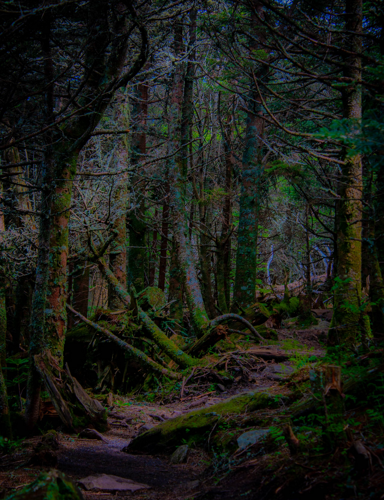
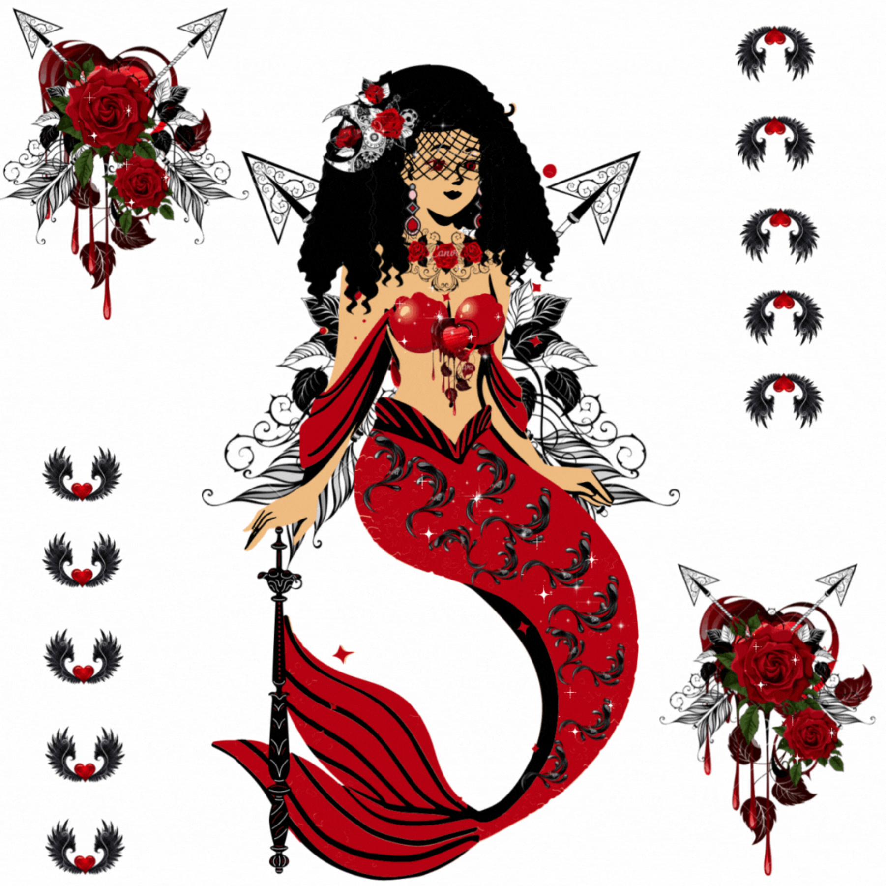
1/1handrawn magical mermaids... present mermaid in a different and unique way
One of the earliest mermaid legends appeared in Syria around 1000 BC when the goddess Atargatis dove into a lake to take the form of a fish.
As the gods there would not allow her to give up her great beauty, only her bottom half became a fish, and she kept her top half in human form.
It's is hand-drawn art and i using a procreate and a lot of apps for animation
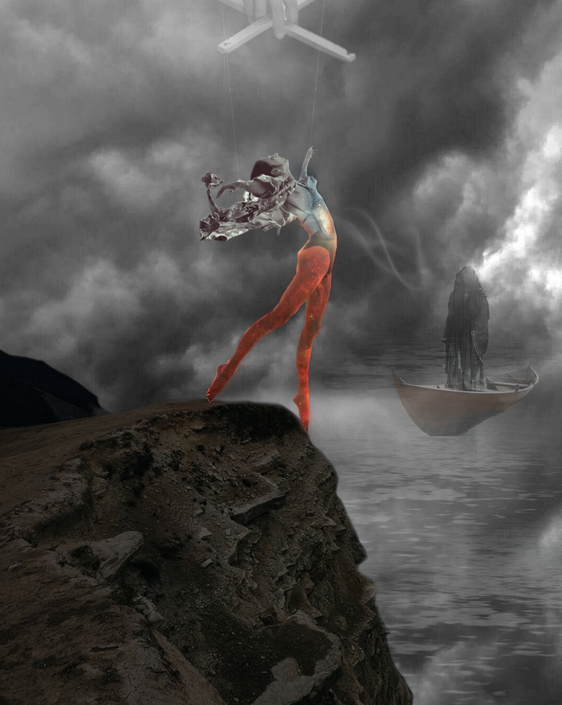
I grew up with very little. Books and movies sparked my imagination. It took me away from my problems and into magical world's. This soon led to me writing my own stories and creating the creators.
My true escape was getting lost in drawing and creating what was in my mind to go along with my stories.
Art and creating has always been a big part of my life. I discovered that you can take your pain and turn it into something beautiful.
My 1/1 's always have a deeper meaning. The origin of the piece is either from an experience or my love for creating escape fantasy lands.
This particular NFT - The last Dance is essentially telling you to make your own path in life. Don't be a puppet. You are part of something bigger that we cannot fully understand. Don't give that away.
As you will see with this piece the red on her legs represents the galaxy that is being drained from her.
This piece was created in PS, I used various pieces to manipulate the subject. I added the cliff. The ocean, The Grim Reaper etc.
From there I took the piece into Lightroom and played around with the lighting until I got my desired effect.
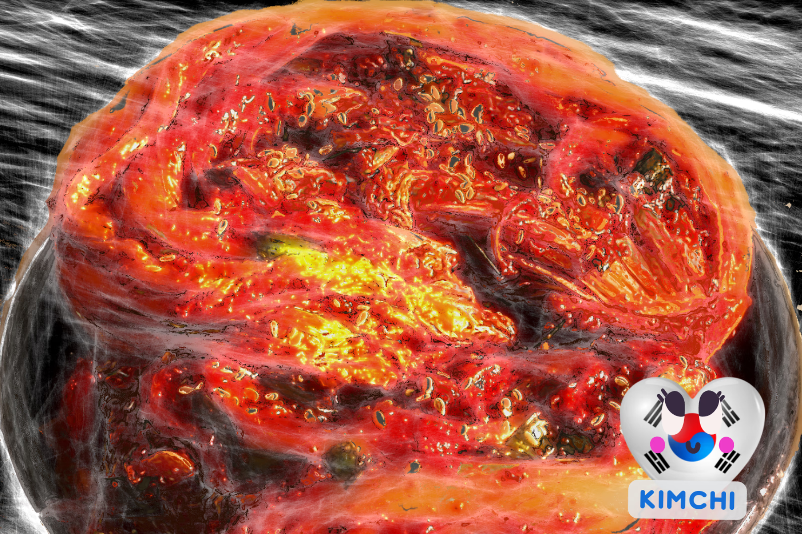
Since when I was a child I had a lot of creative energy. But I don't have much dexterity so I tied up this energy at the computer science world. I loved to make programming and later creating websites and some online illustrations what connected to my work. That was the point when I recognized what makes me happy. When I made something from something different else. The whole creating process is a kind of happiness. The happiness what I want to feel at my grey everydays. My first hobby is to make delicious dishes.
The cooking and making illustraions are have a lot of common points. Creating from raw materials something different is a very calming and uplifting and not least happy process. But i dont know what makes me a unique creator. I think every creator who enjoys the creating process and loves his/her work is unique. I almost forget the most important thing. The happy moments what you give to others. Because that is very good that you enjoy the creating but at least as important that who meet your art will get some positive feeling from that. Without this nothing matters. Nor the food and nor the art.
I like to eat and like to cook and like things what have roots. So traditional dishes are the perfect choice to like. To love. To create, and hope to give some love with it to everybody. Just like foods. Every nation has a miracle in their dishes. And I want to introduce that through my NFTs.
Remember who cooks for you, that loves you!
My imaginare, first of all. I made digital arts, so I use personal and stock photos and GIMP to photo manipulation and Canva for design.

The internet and blockchain technology has played a big role in the way artists are able to create, publish and distribute art. They are now able to upload their creations online to share with the world in a matter of seconds because of these two tools.
I am an AIartist and explore the relationship between technology and art. I create AI-generated artworks with new technologies. My work is about exploring my identity as an artist, building community, and exploring what it means to be human in the future of web3.0.
The key moments in my life that shaped my artistic path were when I was introduced to new technologies, but when I discovered new technologies like 3D modeling software or virtual reality headsets, my passion for art grew stronger. I came to know about NFT back in 2021 but never interested, but due to pandemic Lockdown I have much time to explore web3. So I started learning from that time and now I have been creating AI artwork since February 2022 on different marketplaces. I use Google collab notebooks to generate arts and sometimes AI software, along with also editing and shaping the art using different tools available there.
There are all sorts of different NFTs out there. The source of my inspiration for my NFTs comes from a variety of places. I express a message of spiritual awareness, I got inspired by the stories of alien abductions, and Gaia videos which covered different topics like contacting ET's, the afterlife, past lives, time travel, and reincarnation. I also used AI tools to create some of my NFTs, as I wanted to explore the potential of what these technologies could do. For some collectors, the message is everything. I use the NFTs to express more personal messages. These collectors may have experienced a life-changing event that they want to share with the world, or they may simply want to express their creativity and individuality. NFTs can be used to express a wide range of messages, from the spiritual to the political. And while some collectors may simply be drawn to the aesthetic of a particular NFT, others may be more interested in the message it conveys.
The NFT itself says something about you and and your artwork style that you're interested in, there's an NFT out there for you. So, what are you waiting for? Start collecting today!
When it comes to creating an NFT, there are a few key tools that I simply couldn't do without. First and foremost thing is open source program created by developers to a common man and artists to create the perfect image that I can then use to create my NFT.
But of course, it's not just about the hardware. The software I use is just as important, and I'm grateful to the developers who have created such amazing tools. In particular, I use a lot of AI to help with the process of creating my NFTs. I want to talk about the tools and techniques I used to create my NFT. I'm so grateful to have access to such amazing technology and to be able to work with incredible AI developers.
And finally, I couldn't do without my passion for art. This is what drives me to keep creating new and innovative NFTs.
I'm a big believer in the power of AI and it has potential to change the world for the better. So, when I heard about the possibility of creating my own NFTs, I was excited to get started.
I began by researching the different AI tools that are available. I quickly found that there are a variety of options out there, but I ultimately decided to use Google Collab notebooks and the text-to-image tool. This was helpful because it allowed me to access my GPU and utilize its processing power, with their power and performance, I also used a variety of AI tools, including a text-to-image tool, a tool for stable diffusion, and a tool for inpainting and outpainting.
I then set about creating my NFTs. I started with a variety of images, including some personal photos and some public domain images. I used the AI tool to turn the images into text, and then I used the realesrgan tool to add color and detail.
Finally, I used the inpainting and outpainting prompt engineering techniques to add the finishing touches to my NFTs.
Throughout the process, I was amazed by the power of the AI tools that I was using. I am extremely passionate about the potential of AI, and I am grateful to the developers of these tools for making them available. I'm particularly grateful for the developers of these AI tools. They've made it possible for me to create my NFTs with a high degree of accuracy and detail. Without their hard work, my NFTs would not be nearly as impressive.
I hope you will enjoy my NFTs. I'll continue to use the latest and greatest technologies to create new and innovative NFTs. I believe that AI will change the world in profound ways, and I am excited to be a part of its development.

I think everyone of us had these moments in their life, where things left an impression and therefore artworks are the results of this process which are expressions from the particular artists. My personal key moments that shaped my artistic path are kinda countless: From growing up as a kid in the 80s, in a time where the cold war was part of our daily life, to the easyness of being a young gun in the 90s. A lot of my astethics come from the growing hip hop culture in that decade. I was actively spraypainting from 1995 till today and the style of different artists, some of them real legends,. always had influence on my own creative process. Due to my own participation in that graffiti and streetart ecosystem i had the chance to meet and collaborate with hundreds of artists and all of these encounters left footprints in my own view and style. In the early 2000s i started my education in terms of classic communication design. I wanted to be able to create things that were in my mind, which led kinda naturally to a shift of my career and work towards the path of a 3D artist.
I feel like my creative process is a lifetime journey through different times and mediums. Another huge influence of mine is the anarchic nature of the web 3 space. I started working as a designer on multiple (mostly privacy related) projects. The actual shift to explore the possibilites of AI generated art to express myself is in that regard the consequent step forward.
The NFT i submitted shows an female artist. The paint particles and strokes in her face shows the imprints her artistic journey had on her own personal being. There are a lot of different colors, strokes and stains. To me every stain tells a story, it's a relic of the artworks which the artist created and a cornucopia of stories all the artworks expressed. The image therefore shows how creating art transforms the artist itself into some living artwork.
Claire, the raw version, was created with Midjourney AI. The final version is the result of a long post-production process with different digital image manipulation tools.
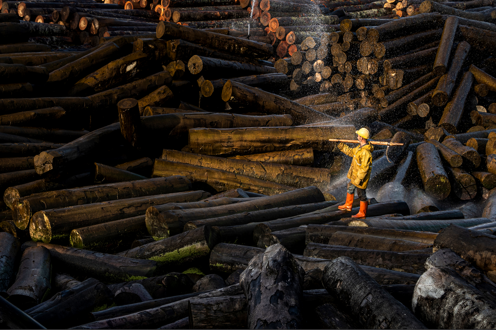
Telling many stories with one frame is just for me. It is my inspiration to make the audience feel different emotions.
This work of mine contains metaphors. I shot it in the logging pool of the wood factory. In this frame, I explained how strange it was that the cut trees were kept in the pool to prevent them from drying out. I named the work "Tree Cemetery".
I used Nikon D7200 to take the photo. I take raw photos. Then I processed it with Camera Raw.

The difficult political situation in the country affected the level of my income. I started looking for extra income. 7 years ago I bought a camera, learned how to work in editing programs, and so began my long journey in the world of creativity.
Never give up on a dream! Dreams nourish our soul, just as the body nourishes the soul. No matter how many times in life we have to survive the crash and see, as our hopes are shattered, we must still continue to dream. If this does not work, then indifference takes possession of us!
Camera, computer. I edit photos in Photoshop and Lightroom.
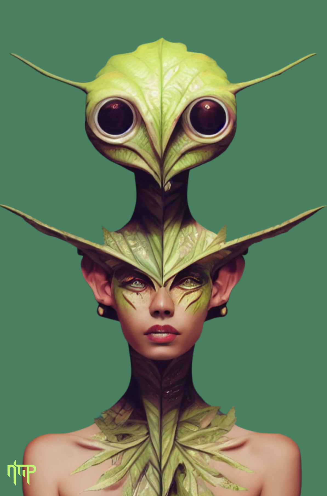

I'm always pushing myself to my limits trying to do even better, many times failing but sometimes making something wonderful. I'm loving drawing, animating, photography and combining those three. U can see how that looks in my Skulls lol collection key moment in my path would be buying Wacom drawing tablet now have so much possibilities and I'm going to explore as much as I can...
I'm always looking to make things fun and if possible little funny, humor is my medicine so I'm not really into serious topics more fun and caree free things I wish to help people forget the usual troubles of the day and relax with art, sometimes can be little sarcastic but never mean or ill intended 🙂
This specific NFT I have painted in program called Krita its a beautiful and free program for painting, drawing and animating and maybe more still exploring it, in my humble opinion it's perfect. Using it comes to me so naturally in combination wit drawing tablet it's extremely powerful tool 🙂


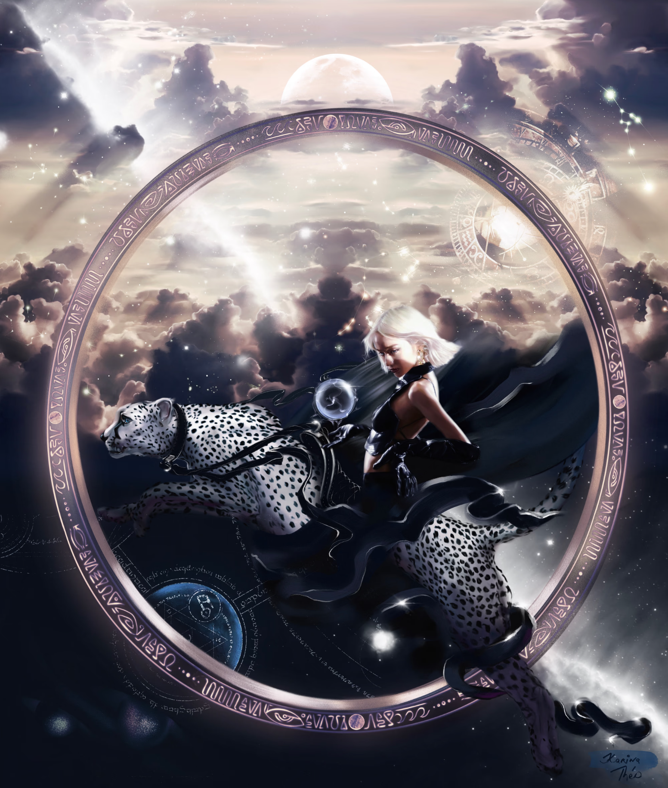
I was born in a village and spent all my life traveling to find my place where I fit, I wasn’t welcome in my own country so eventually life brought me to the distant island. I was able to save my family and bore a child while get ridding from the work of my life - my dream.
It was a long and tiring time mentally and physically we had no one and alone in different countries, traveling on bold enthusiasm, that finally we can stop and at times just pure hope carried us farther farther: blind, but surely, step by step.
That thread deep inside me whispered where to move. I just had to TRUST and listen. Believe I direct us in the right direction, carrying heavy easel and favorite books wherever I go…
So no, I’m not ashamed of nude, I still see the beauty of body and a rising Sun. I am religious and brave; I can take myself anywhere, and feel myself free: free of borders and limits and points of view.
Celeste has my spirit - she’ fierce and humble; hopeful of what changes will come- she’ll accept it, because this is the way things are: they come and go- there’s no point to hold back.
She Gives, she’s Giving all of her Essence to Create a Star. Like the Mother Goddess giving birth to a new beginning, it’s love. ( I gave birth to my son Theo- my masterpiece)
Celeste is not burdened by her destiny, in fact, she’s enjoying it, she chants to new Element to Carry Love, Honor, Might and Glory for as long as it won’t get corrupted - with her mind and promises to the Universe. Glorious and Brave she still has the evil (serpent) waiting for the time and opportunity to attack, but birds of free will are guarding her, she needs to give all of herself to rise it, sweaty and exhausted but full of courage she’s not intimidated by evil; evil and good are always here to counterpart each other- it’s a harmony, balance. There, in that world of heat and nothingness - Oasis of Hope still Blooms. Spirits of Thousand souls should be Reborn in order to get the second chance to be a Universe for new planets- new beginnings. Celeste tells the story to ones who listen, while enjoying the ride, the ride to the universe, in seek of harmony and purpose🤍
My vision makes me unique, my life led me to live by my own rules, but I’m not accepted by society. I’ve always been alone in this world. And through art I can express what I carry. I have a mission but I haven’t found it yet. I’m close feels like I can grasp it. But it slips away the moment I’m able to reach it. Recognition and support will help me open my full potential. Thank you for reading part of my soul🤍
To Goddess Mother, God the Son,
And God the Spirit, Three in One,
Love, honor, might, and glory be
From age to age eternally,
And things celestial Thee shall own,
Creator of the Stars alone.
We all have past, it shapes us: our vision, imagination or views. Sometimes it pushes us back to live in the moments familiar and comfortable. We feel secure to be somewhere familiar: even in our heads - thinking of familiar ways we had…
What if I’ll tell you that there’s no need to feel comfort, to be accepted by society - to co-exist and survive. What if there’re greater powerful forces in life which lead us towards greater deeds? We don’t know it, do we?
But for creativity, for the history- it’s all that matters: what we do and what we leave behind us. When our soul leaves our body that’s all that would matter in the end. And when it does… where do you think it’ll go; will it wait to be reborn and someone in the future will have a dejavú or a dream about real us; will it go to the Abyss spending worthless life or to another Universe to have another lesson; maybe it’ll head straight to Heavens to help as an Archangel for the good in this life? I’ll tell you the story if you’ll look for the signs carefully.
Our bodies are terrestrial (corrupted with time) but our souls are celestial as well as Planets or Universe. They are eternal and made of completely different material - The Fifth Element.
My story is about Celestial bodies; where they take terrestrial shape but made of Fifth Element: they can create or destroy, protect or betray, freeze or burn. Spirits, born of myths and parallel dimensions come alive on my canvas. Born from passion and beliefs, they have a mission to change the world for us to: unite, think and have purpose. Welcome!
I close 55th fantasy romance novel (in a year), close my eyes and have dream-like dialogues in my head: books unheard of, scenarios unseen - playing sometimes on unknown languages, on pure English too(it’s not my native language). Dreams colorful and full of mystery, emotions and full of purpose that something needs to be solved and done!
With coffee I’m thinking on the story- I make sketches on an iPad first, Procreate is perfect for that. Then I make background, and lastly I create main heroine, all the muscles, dips and turns should be perfected in days by days. As a concept artist it takes not less then a month to perfect the idea and texture. I don’t have professional painting education- just bits and pieces, so I perfect myself.
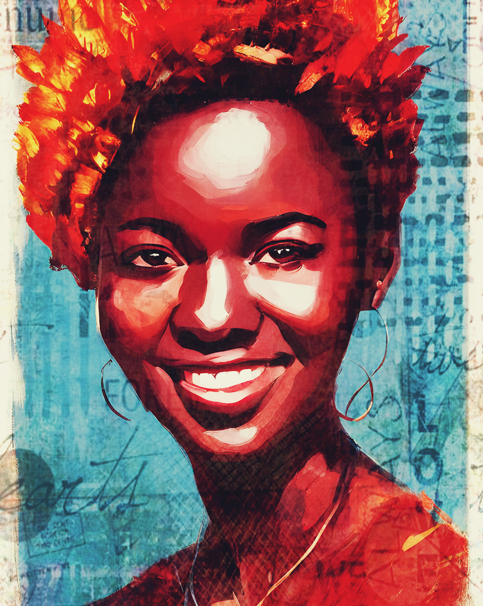
I don't think I can compete with so many beautiful, wonderful, talented artists in the NFT space. I'm just a regular bloke, a civil engineering procurement officer, been creating NFTs since the beginning of this year. Still learning...
Custom-made for #tezos4africa charity event by @KuokaProject partnered with @objktcom in order to finance the first 10 permanent self-sustaining #tezos bakers in Africa.🌍
50% of my primary sales go to charity.
AI, photobashing, photo editing.
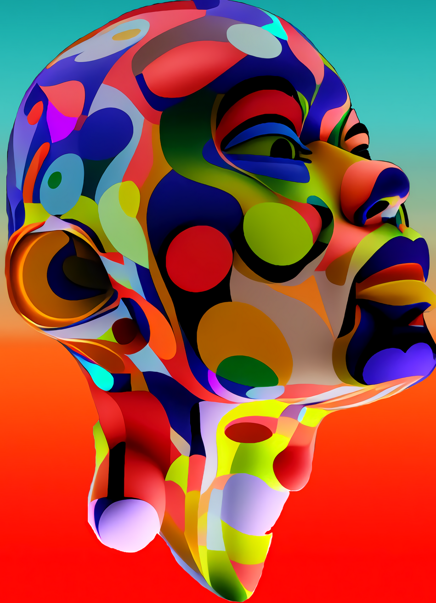
My journey into NFTs began when I was frustrated in my IRL work with a demanding boss. I decided I needed a way to vent my frustrations, and I found that creating NFTs was a way to do just that. Even before NFTs, I had various exposure to the different arts but did not do it professionally. I would help friends with book covers and posters using my skills in photomanipulation; I would write short stories and essays when I also needed to vent some feelings. These were the various art forms I had been using, even though I am primarily in the field of science. When I discovered AI and NFTs, I knew I could bring the game to a newer level. This was when I realized that I could extend my creative limits, still work on my day job and have the opportunity to mint my pieces on a digital platform no one had ever seen yet. This is what makes my journey unique; I always use the confluence of code and aesthetics in describing myself and what I do because that, for me, is what NFTs are all about--the combination of the technical, technological, and aesthetics. This is the most suitable time to showcase this fantastic confluence of art and technology.
This particular piece is titled bravery because of the fierce emotions on the character's face. I also chose bold colors to highlight this to provide a striking look once someone sees the piece. The different highlights and strokes that make up the face also flow together like a tribal tattoo or an heirloom mark that seems to show that this face is that of a warrior, someone who has earned his keep on the battlefield, someone who has faced trials and had stared them down and won. Despite the somewhat grim background of the character, the strikingly bright colors offer a stark contrast. In the creation of this piece, those bold colors provide the hope we all face, also shown in the way the character looks up in anticipation. That look and the colors give a different perspective to the grim description of what the character has gone through. The colors signify hope; they suggest a transition from the dark past to the bright future that awaits. This is the essence of bravery. To face tomorrow with head held high, allowing the colors to wash away the darkness that may have been a part of the past.
This piece was created through photo editing and AI tools. It was done by layering several different abstracts together to form a face. The main obstacle I encountered was creating the layers without a mouse and using only a trackpad on a laptop. This created an extra challenging layer since movements were limited to what I could do on the trackpad. Different AI-generated abstracts were used in these, and a template was used from a previous competition. After combining the layers to create the base image, the whole thing was rendered using stable diffusion. The new stable diffusion algorithm allows the user to input an initial image and then tweak the parameters to match the prompt or come up with an output that is either similar or very divergent from the original image. This allows the creator to have more control over the final image. Adjusting prompts, noise values, and iterations make the final image more closer to what the creator has in mind.
The background was added to the image when the initial face was made. The following image was again run through the AI algorithm to create the final image.

My uniqueness as an artist is a combination of my passion for art, technology, and human psychology. I am an audiovisual communicator and digital artist who is always looking to create new realities using new media tools. Like image and video montage, elements of cinematography and finally artificial intelligence. I am very excited to be able to tell stories through art, in my case creating new surreal universes, which are very similar to what a human considers as their reality.
This collection of pieces explores various representations of the Metaverse and how it collectively creates and connects. Creating from communities, virtual spaces, games, and even new concepts related to blockchain technology.
With influences from Andy Warhol to Carl Jung, new conceptual variations are created that serve as a tribute to them and their thoughts. The use of mass iteration hints at the trading of blockchain editions that makes art more accessible to everyone. Also, visually that massive visible repetition represents a web of infinite size that connects us all and is always free to explore, like Jung's collective consciousness.
This piece was made using Stable diffussion Deforum colab 🖤.
It was then processed through Jax Huemin diffusion 🧡 To give this a more prominent texture to the image and give it the touch of my style in which if you look carefully you can see eyes or faces watching you, representing for me the awareness and knowledge of the/my shadow.
Finally in photoshop I made an image montage to add or remove details closer to what I need.
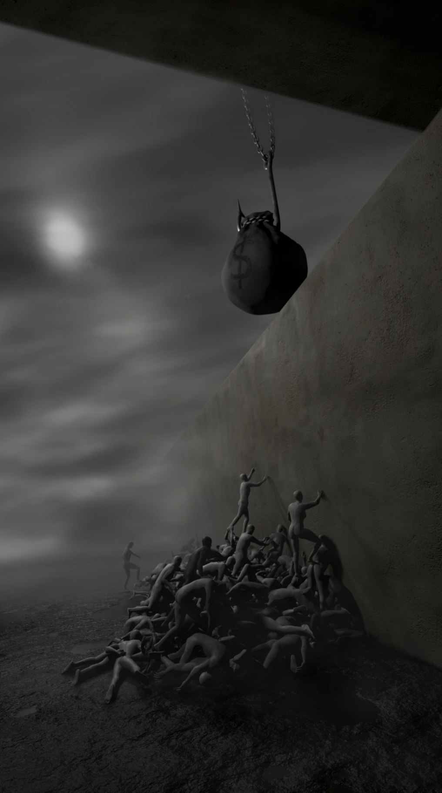
I've never been good at selling myself, or to be honest, I've never liked it. I know it's a big disadvantage for me, but that's just the way I am.
I couldn't say a specific moment. It has always been in my life. When I was a child I used to draw, when I was a teenager I went off the path, I took up art again after a turning point in my life. For other circumstances I moved away from art again and a few years ago after an injury, I returned to focus (not as much time as I would like) on art.
The greed of many people to get what others put out of their reach.
What inspired me for this creation, or rather, I had to make this creation. As a protest.
Tired of seeing how many people do whatever it takes to get their goal, no matter how they do it or the consequences it may have on others and their lives. It was something I had to express and share.
A lot of words is not my thing, I apologize.
The work is created with the 3D Blender program.
Some retouching, such as shadows, with ClipStudioPaint.

I could write a book on that! LOL! But I'll try summarize. I started my art journey back in the days before computers, I don't want to date myself, but like literally, computers didn't exist yet except at IBM or in Scifi movies. So I have a strong pencil/pen foundation. In the early days I wanted to be a penciler for Marvel or DC, but life had other plans and I ended up going into music and was fortunate to have had success as a world renown Producer/DJ, have performed in more countries than I can remember and have even had my music featured in anime (Space Dandy). However, the desire to create visual art can only be surpressed for so long, and back around 2000 I discovered anime and the desire to create became to strong to ignore. That was also the time the animation bug struck, and I began an intense regimine of learned everything I could about anime, animation, and modern techniques for creating graphics. At that same time I entered the corporate IT automotive world, and soon found myself being one of the go to guys for top graphics. After a few years in the corporate world, I decided to quit and do freelance graphics. During the freelance era was when I got really heavy into animation as one of my most consistent gigs was as a forensic animator. Fast forward a few years and the corporate automotive world came calling with an offer I couldn't refuse. After a few more years in the automotive sector, I entered the world of Defense and Space where I've remained until this day. Add into the mix, I was an early adopter of using A.I. to create artwork (I've even published a book on A.I. art; "Beautiful A.I."), published a mobile game for Android; "Diafygis", worked on various indie comic books and gaming companies, had 2 marriages, 4 kids, I'd say what makes me unique is the wide breadth of life experiences I have to draw from and incorporate into my art. In summary, I'm a Graphic Artist, Animator, and Deep House Producer with 15+ yrs creating illustrations and animations for Space, Defense, and Legal (forensic animation) industries.
There's no grand message hidden within my NFT. No. I just wanted to make something that looks cool and makes people feel good when they look it. Nothing more, nothing less. It was inspired by my visits to Japan, in particular Tokyo. Out of all the places I've been, Tokyo is by far my favorite city. It's hard to explain, but I feel a sense of belonging whenever I'm there. I'd feel such a calm feeling just hanging out in Shibuya or Akihabara, people watching while taking in the sights, sounds and smells, all the while enjoying a nice smoke (don't smoke kids, it's bad for you!) So with this particular NFT, I wanted to see if I could recreate that sensation a calm moment, no where to go, just hanging out in Tokyo enjoying a smoke.
This NFT is a 3D piece that I created using Poser and celshaded using a custom shader node process that created for use within Poser (don't want to reveal to much about the shader node. The Colnel never reveals the secret ingredients). The tetures are custom textures that I created using Photoshop and the buildings are just a kitbash of various 3D objects with custom textures.
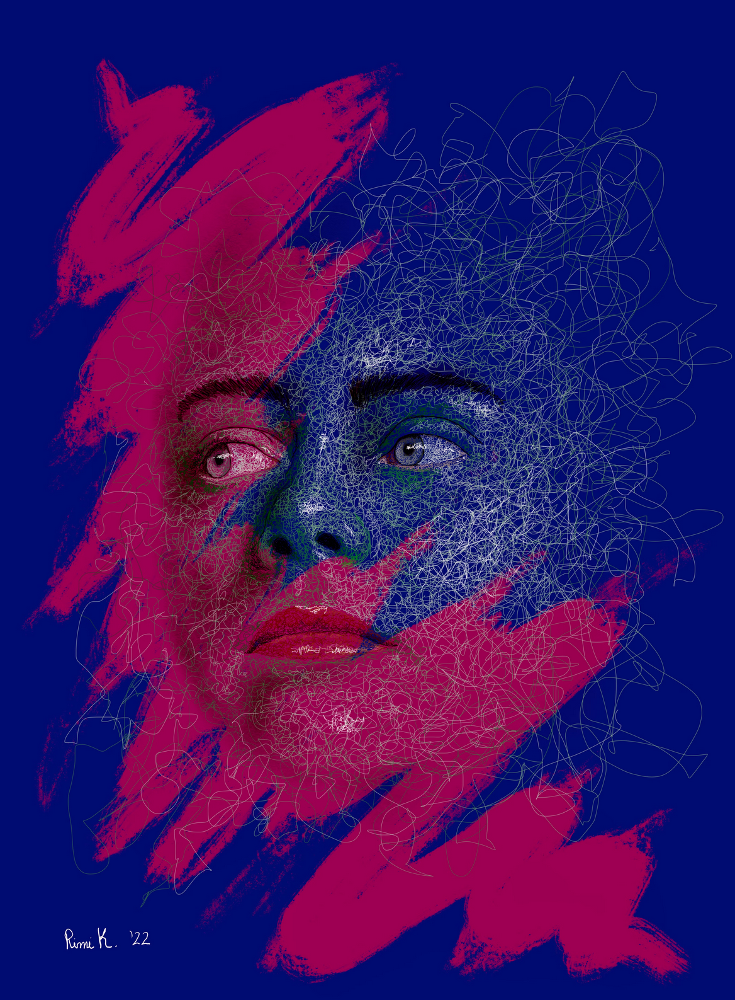
I am a traditional and digital self taught Artist. for my digital art, I use a unique scribble technique to draw my faces and portraits. During covid lock down I used to scribble faces on paper while homeschooling my children. They then developed into the intricate digital faces I create today.
My father who was an avid art collector was my biggest inspiration in regards to painting and art. The most important turning point for my artistic path was during Covid Lockdown. Art is what kept me sane during the whole absurdity of what was going on around us. It was like my daily meditation and therapy. It was an outlet to all my bottled up feelings regarding distancing, homeschooling my kids, and how our world and experiences had changed.
My digital Scribble faces explore different themes of mental strengths and weaknesses, they describe the chaos and struggle of my mind. They present an inner observation to how my mind struggles and copes with different feelings and emotions.
"Reflection" speaks of the state of your mind and how it can reflect positively or negatively on the way you lead your life and how you are as a person.
When creating my Scribble Faces, I start out by mapping the basic features of the face and then slowly start to scribble in the detail using darker shades for dark areas and lighter shades for the light areas. Usually my color palette takes many turns during the timeframe of the artwork, depending on what colors I'm feeling at the time or what message and feeling the portrait is giving me. I started out doing my faces on paper, and then moved on to Procreate that gave me the freedom to create at any time and place and to also zoom in on details. My scribbles became tighter and closer, giving a more realistic effect.

Creativity is one of the main characteristic of a human being. Since the dawn of a mankind art helped to overcome difficulties and entertained us. Now we are in the new era, new spin of evolution has come. With the help of digital technologies art really broke all the boundaries and now is available for everyone with internet connection. And am so happy to be the part of it.
Can't really say that I'm an artist from the childhood. But I've felt this magnificent experience of creating in my late teenage years. Not as a 3d artist but as a photographer. So I've decided to connect my life with this. Several years in the university, years of practice and now I'm the director of photography on the leading TV channel.
Now it's a new phase. I'm an introvert by nature and sometimes it's difficult for me to organise big group of people and filming equipment to embody my ideas. So why don't use 3d instead? That was my question and I found an answer. Cinema 4D software. Diving deep into this tool I'm in the whole new universe with no limits at all. But of course there is one limit- my skills. I've been studying this software for more than a year. Of course I can't create complex structures or different worlds for now. But I can entertain you with loop animations!
I really like this feeling when 5-10 sec. animation can be looped for ever. It's totally hypnotizing. And I want to share this hypnosis. Infinite loop animations are carefully resigned and rendered for you.
Relax and watch.
The main goal of my art is to make you hypnotized. I really like when my followers say- I was staring at this for like half an hour! This is the best appreciation for me.
Watch my infinite loop animations, relax and enjoy!
Everything is simple. Cinema 4D software and Octane render. And my imagination of course :)

Hi ! I'm Diana, & I'm from India. I've been studying and working with a variety of energy modalities for around 8 years now. I love engaging with crystals, psychedelics, sacred geometry, the chakric system & astrology to name a few. I've been trained in the ancient Indian system of 'Varmakalai', which works on the basis of vital energy points in the body, as well as Ayurvedic bodywork therapies.
I practised natural building before joining the NFT space, creating structures made out of natural materials like cob, stone and bamboo. Realised at one point I could incorporate sacred geometry into these structures (it is the basis of all life!), and that was a complete turning point in my life in general.Everything just 'fit' better.
What fascinates me the most though, is finding the underlying (and overarching?) connection in everything around me (and in myself), which is how my genesis project came to be.
Each grid in this collection has a certain intention behind it, they're all explained in detail alongside each NFT.
The one I've submitted is titled 'Heartfelt', and the main inspiration is always my own journey, and the lessons I've learned, and continue to learn.
Description -
"Harder times require extra loving.”
Learning to live from the centre of your heart is exactly what this grid is designed to help with. Often times we find ourselves in situations and places in our lives that require us to have our defences up, to be aggressive, to be hard, and honestly that’s just life. But we just as often to forget to bring them back down.
Most often though, we find ourselves oscillating between the two extremes. The calm and soothing energies of the crystals used in this particular grid will remind you to soften the edges that inevitably get too hard and will teach you to live from a space of love, while also maintaining healthy boundaries.
The crystals are aligned with the sacred geometric pattern of Metatron’s Cube - its energy helps in understanding and internalising the balance and harmony of nature, and also serves as a guide for personal transformation. The integrated energies of the crystals and the sacred geometry will essentially aid you in balancing the energies of your heart chakra, hence allowing you to live more in harmony with yourself and your surroundings.
I've always approached sacred geometry in its traditional form, so the tools I use to create are my trusty compass and straight edge. I don't use any measuring tools in this process. This usually makes it take a long longer to create each geometric form, because even the more complex ones are derived from the basic form of the Vesica Piscis (two overlapping circles with equal radius).
Usually starts with a pencil tracing, and once I know I've got it right I trace that with a pen, or paint- depending on the particular grid I'm working on.
The crystals are then laid on top of each grid. Each crystal has its own unique vibration and frequency, so the crystals are selected based on the intention and energy flow I want to convey through each grid.
And then I take a photo using my phone camera and a makeshift lightbox my partner created for me. That's it !
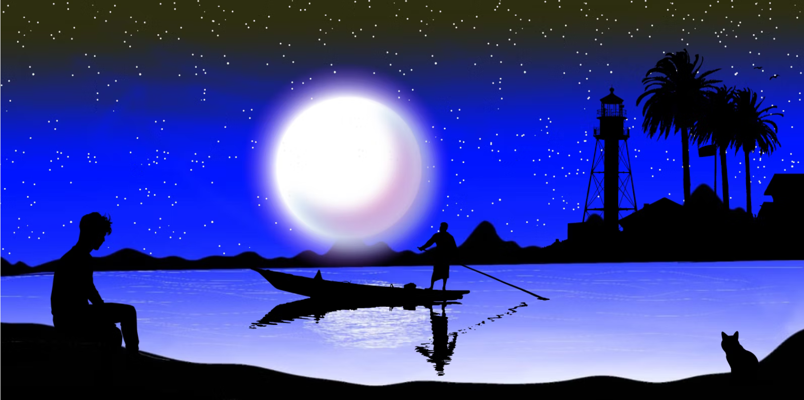
My style of silhouette , they are dreamy and unique
A beautiful world full of beautiful sceneries
A dream world that everyone wants to live in
My works are collage . I make them using canva. Where first i decide a scenery and then play with every available elements to get a right combination which needs to be dreamy
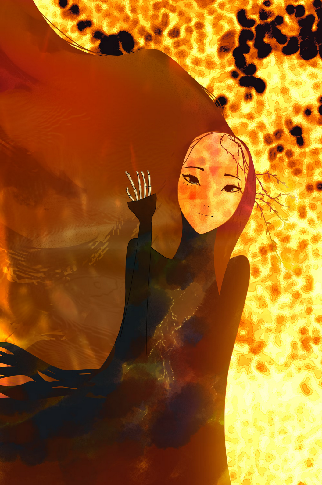

The moment when I look into someone's face that emotion of sadness, happiness, pain or problems of life inspired me. No one knows how the people in rural areas live their life because of the scarcity of journalists and photographers in small areas. In 2013, when I started my photography journey I started with clicking portraits because it not only shows the story but a deep connection with them which gives me lessons in my life always. I choose photography because it's a privileged moment for me to photograph them, and their real character with life connections. In some village areas in the world where people don't get hospital facilities where no one is there to listen to their pains, problems, or how they going through their obstacles, that's the reason why I take portraits in the streets, these factors are my key moments in my life that shaped my artistic path.
Sadness, happiness, pain and problems are written on every page of life. And reading the pan of life in the picture is also an art. I want to share about these people of the world in my work for whom we get grains, we do not die of hunger, despite, good facilities not being provided to their house. The emotions of them are expressing their character filled with happiness, sadness, pain and problems.
My work also shows the deep connection of my soul because in my work it shows my passion, and my patience for my work, my situations, and my emotions, with those people I get inspired because I get to know from them how life is and how to live in such situations. Being sadness, pain, and problems, yet I see them as happiness from the core.
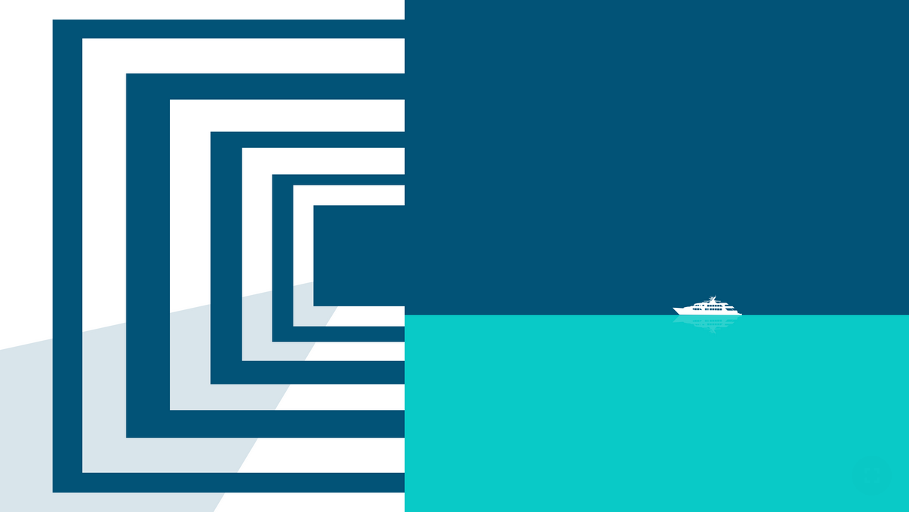
If we talk about uniqueness, so I say my art will tell you. I'm vaarin & here creating & experimenting everyday. Want to continues this journey, made more arts but don't have equipment & resource but I'm doing my best! I'm creating from childhood and continue creating, by profession, I'm graphic designer & video producer but due to covid, its finish but I won't stop creating and found nfts and then again start creating but due to issue of funds, I can't give my best and this is a major reason sometimes for me, I demotivate and don't focus on creating but I trying my best and one day this problem also solve soon!
I create lot of thing because I love creating, like photography, motion graphic, painting, minimalist, gif stories, character design & lot more, want to try create more but due to fund its not happen! I don't want to master in one thing, I want to enjoy everything, no matter how much I get, less or more. just want to create everything because that I love but If we talk about what I want to continue so I can go with minimalist art and my gif stories (wip).
First time I discuss my this story on internet, I don't know what to type here so I put this here...
I never add description for my art because I always I said "sometimes less is more" but here showing me add more than 500 word for better ranking so I'm explaining below.
SO I submit my "Miami View" this is my latest work so if you see this on a big screen or on a big print with white background and just starring for 5-10 min, so you'll know and if I add my description there so you saw my art like my description & I know few saw differently but most of saw like that as I discuss above but I don't add desc. because you have your perspective means in this world everyone have different perspective and I don't want to convey my story or my perspective though art, I want people make own story with my art, I want people see my art with own vision not mine.
SO If you ask to me what I saw in this piece so I say, I saw peace in the ocean, sky happy more than ever with full of blueish color and far way on yacht someone enjoy this moment with their frens & family and left side pattern show - path to the top, half frame of this moment and someone hotel rooms on ocean side so yaaa this is mine, I want to know about yours.
I want to create art but give chance to everyone to create their story through my art.
So I create my this art with adobe photoshop but my laptop don't powerful for this tool, even If I save something lack of system requirement I don't able to get wht I want sometimes, I need to close everything and then try restart & try again & again sometime but sometimes it won't problem because sometime file not big, like this one and sometime I have, like I recently drop "deli store" and this is big file so I have face some issue but generate finally.
I like adobe product for digital making and I know about ps, ai, ae, pr & lrc and more...want to create so much tool but can;t make due to lack of resource but overall I like these tools for my digital making!
Sry I don't know to wht to write and also english not 1st language so I hope you'll understand and I don't know why I'm adding my these story but I say don't have other and don't know wht to write atm. thanks!

While in college studying botany, originally i wanted to learn to make plants into medicine, i realized how important art is and is to me. I changed direction to study art/photography. i was offered an art teacher position when it was learned that i used to go out in the courtyard of my apt bldg to paint w the latchkey kids in the hood. Later i opened a small teaching studio of my own. As an art teacher in a private studio i learned that i connected w victims w special needs, elderly, folks w anxiety. After 15 plus yrs, & taking pysch classes, i closed my teaching studio to focus on private, one on one lessons. Now i have more time to create some of the ideas and visions that are continually swirling in my head, i also have more freedom to help folks find a little peace in their soul , or in their minds via art. I love what i do to help folks though i would always like more days off to create. Lol.
I only recently learned about nfts thru a friend. I have so many visions in my head, & can work in several mediums, yet i continuously return to painting women, probably because i am one. There is a sublime challenge, ive found, in painting a portrait, figure, or flower. All those tiny nuances can make or break a painting. Da vinci is certainly my idol
I use many tools to create.
3 yrs of photography classes means i always have a camera in my hands . Either my nikon or my phone cam. After taking a photo i will typically play w it in one or more of the various art apps or ibis paint. After playing and manipulating i will often paint the image. Oils & watercolors are my fav mediums
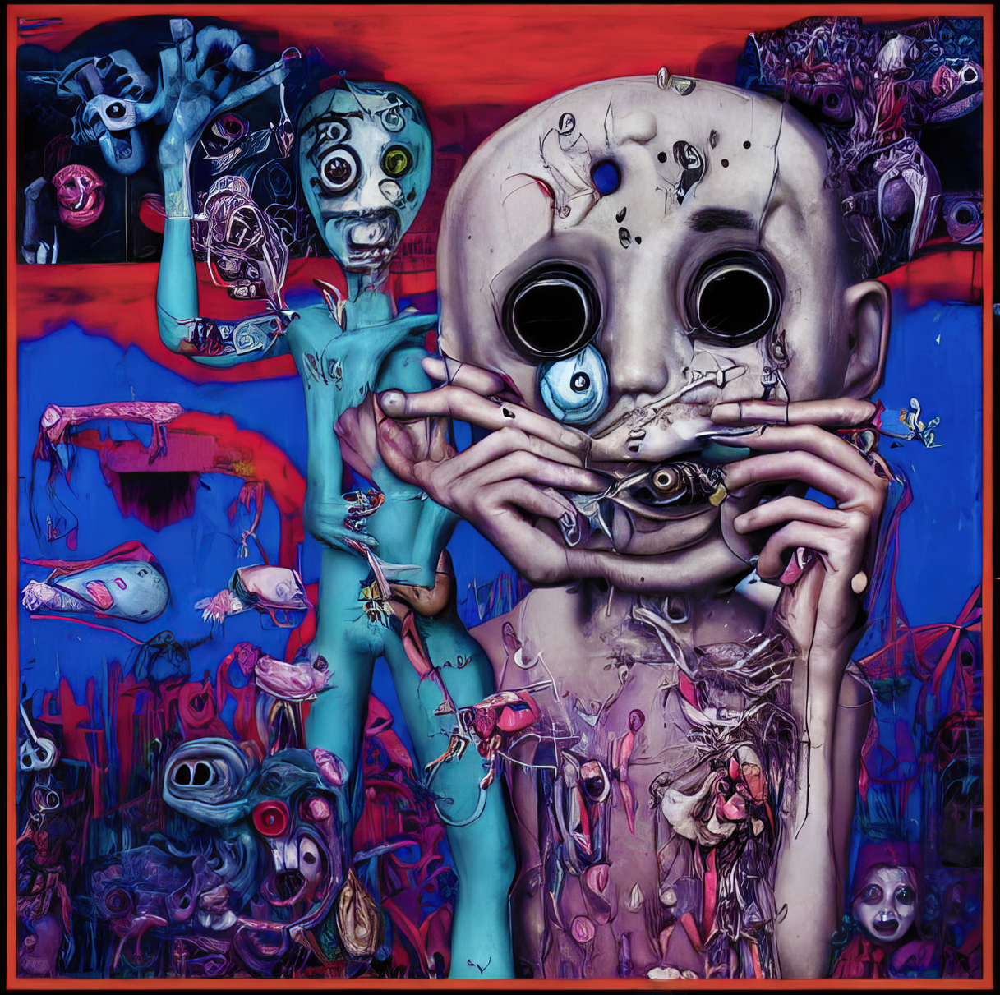
I've been working as an electrician in shipyards all over the world for the past 15 years. It's been a good career, but between the pandemic and crypto savings, I've been able to return to my long lost passion for creating art and music.
This piece is a whimsical surreal piece of art that showcases the anxieties I am often overburdened with. Most of my life I've battled issues that come from being bipolar, mostly severe social anxiety.
I drew a rough sketch in Photoshop, added some color and texture. I then used the digital drawing as an Initial Image that I ran through Stable Diffusion (Ai model) with some prompt engineering to give me the desired results.
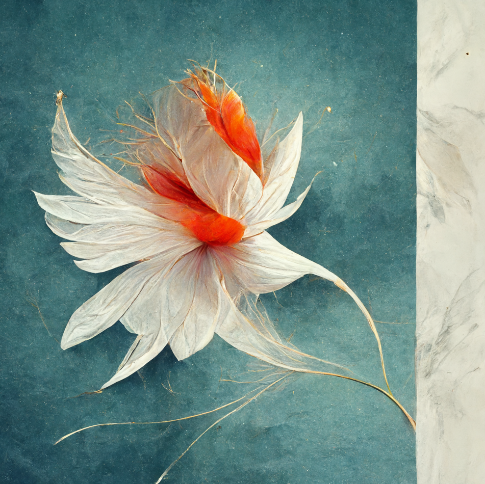
I started painting, abstract art, in the 90s. For me, besides my work, it was an instrument to relax and to forget my anger and the annoyance of everyday life. Art has always helped me to calm down and find myself. Now in 2021 I started to deal with NFT. I didn't understand anything and everything was new but I love working with IT and so I started my way to become an AI artist. I find it a miracle how I can create a picture from my words and thoughts. To express my feelings and to be able to bring this art closer to a wide audience. It's a new life path that I've started thanks to NFT
Mother Nature creates little miracles every day. Flowers are one of them. Flowers are an expression of joy or sadness, farewell or reunion.
For this piece I was inspired by the water lily. We have these beautiful flowers on our lake by our house. Every year their blossoming tempts me anew. Since I have more time for myself, I experience nature much more intensively and see things like the water lily much more clearly. I can enjoy her. I see how the leaves form, then slowly the bud comes, later the flower starts to sprout and finally everything disappears back into the lake and wakes up again the following year.
It start with a image in my head or a wish I have. First, I start to think about words that would best represent my image, to create prompts. Then I try these prompts in Midjourney or stable diffusion. Here it was Midjourney. Then the prompt is refined and sanded until I like the result and I'm satisfied with it. This can take a few days because I always want to improve or adjust the image. When I'm satisfied, I try to get the best out of the piece with Tencent and Photopea. For example make it finer, less grainy or make the colors more intense with Photopea or try a filter. These are my steps used in this piece. I did upscale right here in Midjourney with maximum Upscale. I use my Acer Laptop to create my art.

All of my life turns around art in its different ways: theater, music, plants, photography, painting, love and nature. I think as an artists we have the responsibility to communicate something with our creations. I believe strongly that art could influence a lot in socio-political topics and for me that is the most valuable part of an artistic creation. I’m living a beautiful life in spite of all problems, I think my creations would not be what they are if didn’t live those lessons. Most of my photographs tells my story, my current feelings at that moment, what is happening around me, global problems… My objective is to help with my artworks, to tell someone who identifies same as me that he/her is not alone.
All of my NFT portraits are from myself because I don’t want to profit of someone’s image. Most of my artworks talks about feminism, equality, injustices, pollution, human egocentrism, life as a treasure, political problems in my country, stop violence, etc.
I use my oldie but loyal camera (A D3300 model), my lenses, sun light or lamp lights and my favorite software Photoshop.